Cross-site composites and site groups
Pre-heatwave composites compared across sites and fixed windows.
Site similarity and groups
Site similarity of fixed-window composites and the four site groups
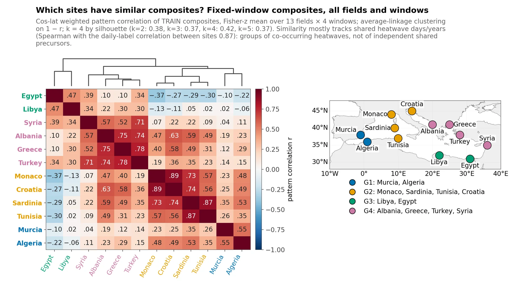
About this figure
Left: cos-lat weighted pattern correlation between the training composites (1950–2010) of each pair of sites, averaged with Fisher z over 13 fields × 4 lag windows and ordered by average-linkage clustering (dendrogram above). Right: map of the sites coloured by group (k = 4 groups, chosen by silhouette). Similarity mostly follows shared heatwave days and years (Spearman 0.87 with the between-site correlation of daily labels), so these are groups of sites with co-occurring heatwaves, not of independent shared precursors.
general/figuras/slides/S05c_site_similarity.png
Site similarity by lag window: local vs remote fields
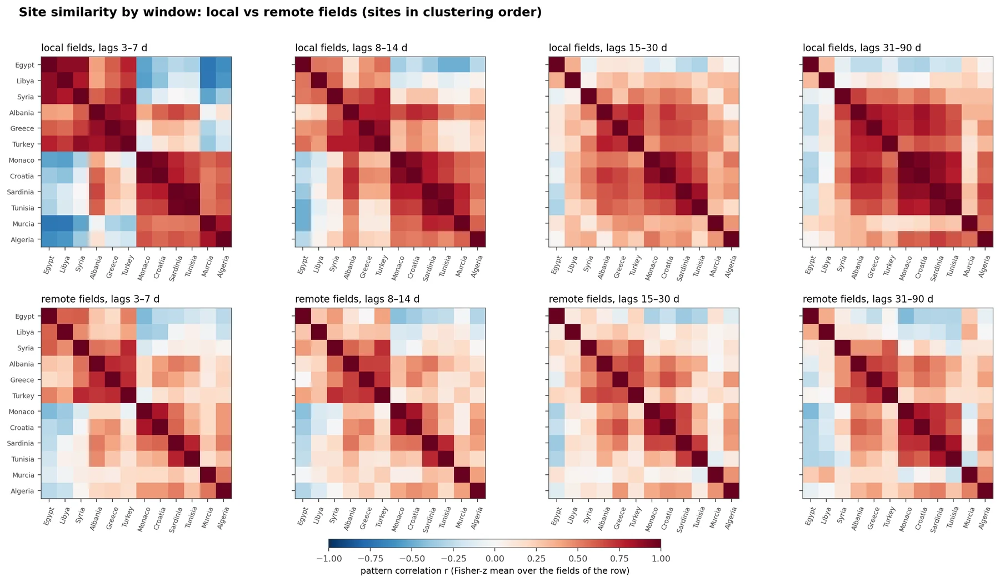
About this figure
Pattern correlation r between pairs of sites (Fisher-z mean over the fields of each row) for local fields (top) and remote fields (bottom) in the four fixed lag windows, with sites in the clustering order. Clustering with all fields of a single window reproduces the four groups with adjusted Rand index 0.77 at 3–7 d, 0.66 at 8–14 d and 0.45 at 15–30 and 31–90 d. The agreement of the remote-field similarity with the correlation of daily heatwave labels decreases with lag (Spearman 0.92 at 3–7 d to 0.65 at 31–90 d).
general/figuras/05d_site_similarity_by_window.png
Atlases by site (raw composites)
Murcia: raw fixed-window composites, 13 fields × 4 windows (train 1950–2010)
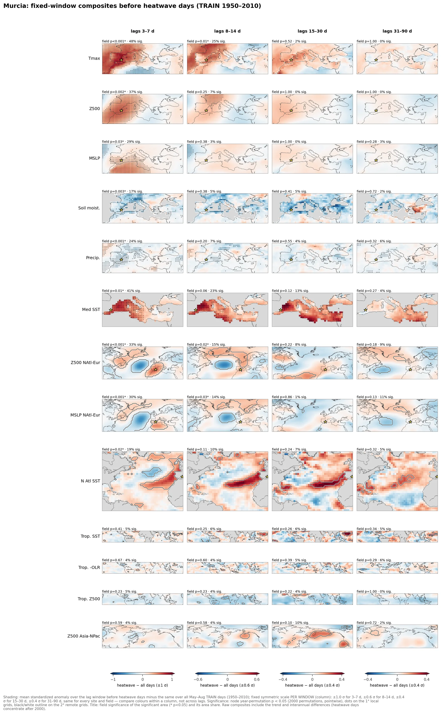
About this figure
Rows are 6 local and 7 remote fields and columns are lag windows of 3–7, 8–14, 15–30 and 31–90 d before Murcia's heatwave days; shading is the mean standardized anomaly over the window minus the same over all May–Aug train days on a fixed scale per column (±1.0, ±0.6, ±0.4, ±0.4 σ), and raw composites include the trend and interannual differences. Dots (1° local grids) or outlines (2° remote grids) mark year-permutation p < 0.05, panel headers give field significance and significant area share, and the star marks the site. Fields with field significance (p < 0.05): 9 of 13 at 3–7 d, 3 at 8–14 d, 0 at 15–30 d and 0 at 31–90 d.
general/figuras/05a_atlas_site/Murcia.png
Monaco: raw fixed-window composites, 13 fields × 4 windows (train 1950–2010)
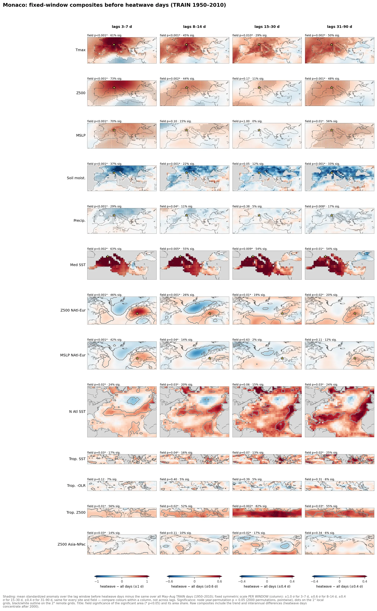
About this figure
Rows are 6 local and 7 remote fields and columns are lag windows of 3–7, 8–14, 15–30 and 31–90 d before Monaco's heatwave days; shading is the mean standardized anomaly over the window minus the same over all May–Aug train days on a fixed scale per column (±1.0, ±0.6, ±0.4, ±0.4 σ), and raw composites include the trend and interannual differences. Dots (1° local grids) or outlines (2° remote grids) mark year-permutation p < 0.05, panel headers give field significance and significant area share, and the star marks the site. Fields with field significance (p < 0.05): 12 of 13 at 3–7 d, 10 at 8–14 d, 5 at 15–30 d and 10 at 31–90 d.
general/figuras/05a_atlas_site/Monaco.png
Sardinia: raw fixed-window composites, 13 fields × 4 windows (train 1950–2010)
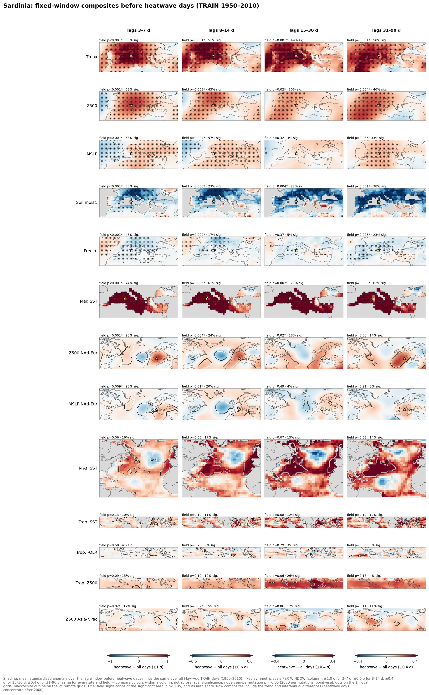
About this figure
Rows are 6 local and 7 remote fields and columns are lag windows of 3–7, 8–14, 15–30 and 31–90 d before Sardinia's heatwave days; shading is the mean standardized anomaly over the window minus the same over all May–Aug train days on a fixed scale per column (±1.0, ±0.6, ±0.4, ±0.4 σ), and raw composites include the trend and interannual differences. Dots (1° local grids) or outlines (2° remote grids) mark year-permutation p < 0.05, panel headers give field significance and significant area share, and the star marks the site. Fields with field significance (p < 0.05): 9 of 13 at 3–7 d, 9 at 8–14 d, 5 at 15–30 d and 6 at 31–90 d.
general/figuras/05a_atlas_site/Cerdenia.png
Croatia: raw fixed-window composites, 13 fields × 4 windows (train 1950–2010)
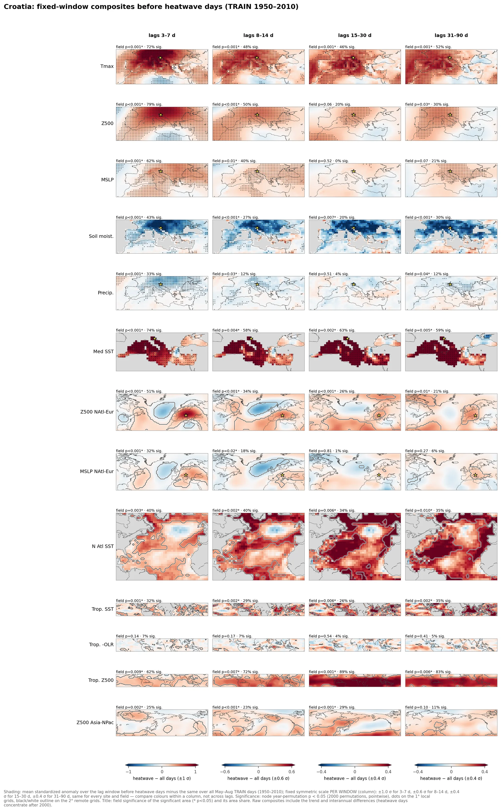
About this figure
Rows are 6 local and 7 remote fields and columns are lag windows of 3–7, 8–14, 15–30 and 31–90 d before Croatia's heatwave days; shading is the mean standardized anomaly over the window minus the same over all May–Aug train days on a fixed scale per column (±1.0, ±0.6, ±0.4, ±0.4 σ), and raw composites include the trend and interannual differences. Dots (1° local grids) or outlines (2° remote grids) mark year-permutation p < 0.05, panel headers give field significance and significant area share, and the star marks the site. Fields with field significance (p < 0.05): 12 of 13 at 3–7 d, 12 at 8–14 d, 8 at 15–30 d and 9 at 31–90 d.
general/figuras/05a_atlas_site/Croacia.png
Albania: raw fixed-window composites, 13 fields × 4 windows (train 1950–2010)
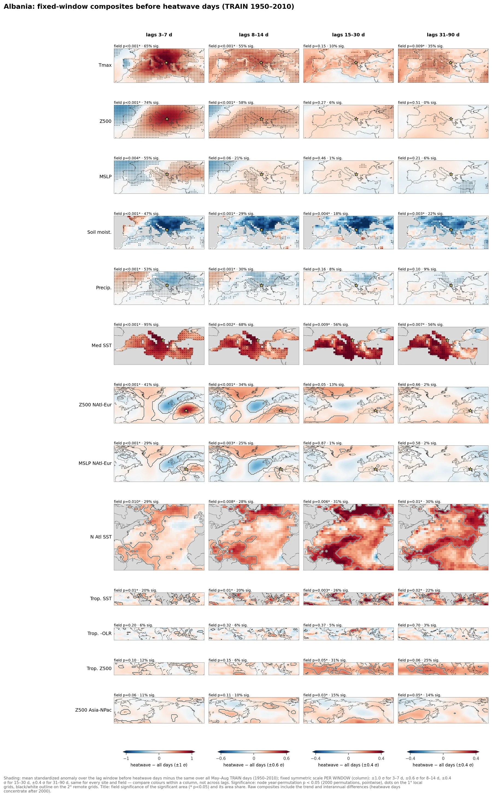
About this figure
Rows are 6 local and 7 remote fields and columns are lag windows of 3–7, 8–14, 15–30 and 31–90 d before Albania's heatwave days; shading is the mean standardized anomaly over the window minus the same over all May–Aug train days on a fixed scale per column (±1.0, ±0.6, ±0.4, ±0.4 σ), and raw composites include the trend and interannual differences. Dots (1° local grids) or outlines (2° remote grids) mark year-permutation p < 0.05, panel headers give field significance and significant area share, and the star marks the site. Fields with field significance (p < 0.05): 10 of 13 at 3–7 d, 9 at 8–14 d, 6 at 15–30 d and 6 at 31–90 d.
general/figuras/05a_atlas_site/Albania.png
Greece: raw fixed-window composites, 13 fields × 4 windows (train 1950–2010)
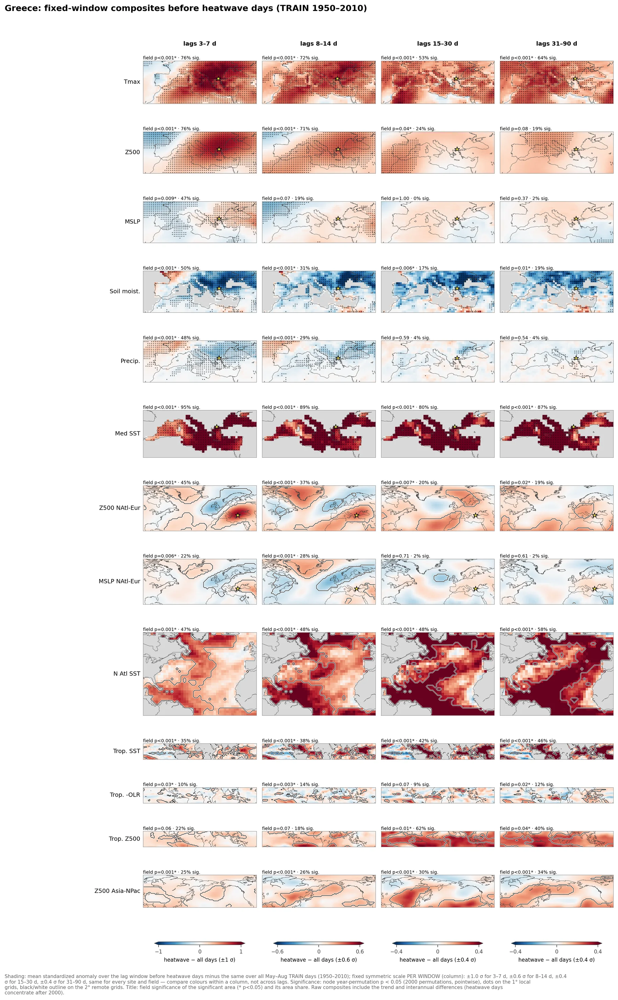
About this figure
Rows are 6 local and 7 remote fields and columns are lag windows of 3–7, 8–14, 15–30 and 31–90 d before Greece's heatwave days; shading is the mean standardized anomaly over the window minus the same over all May–Aug train days on a fixed scale per column (±1.0, ±0.6, ±0.4, ±0.4 σ), and raw composites include the trend and interannual differences. Dots (1° local grids) or outlines (2° remote grids) mark year-permutation p < 0.05, panel headers give field significance and significant area share, and the star marks the site. Fields with field significance (p < 0.05): 12 of 13 at 3–7 d, 11 at 8–14 d, 9 at 15–30 d and 9 at 31–90 d.
general/figuras/05a_atlas_site/Grecia.png
Turkey: raw fixed-window composites, 13 fields × 4 windows (train 1950–2010)
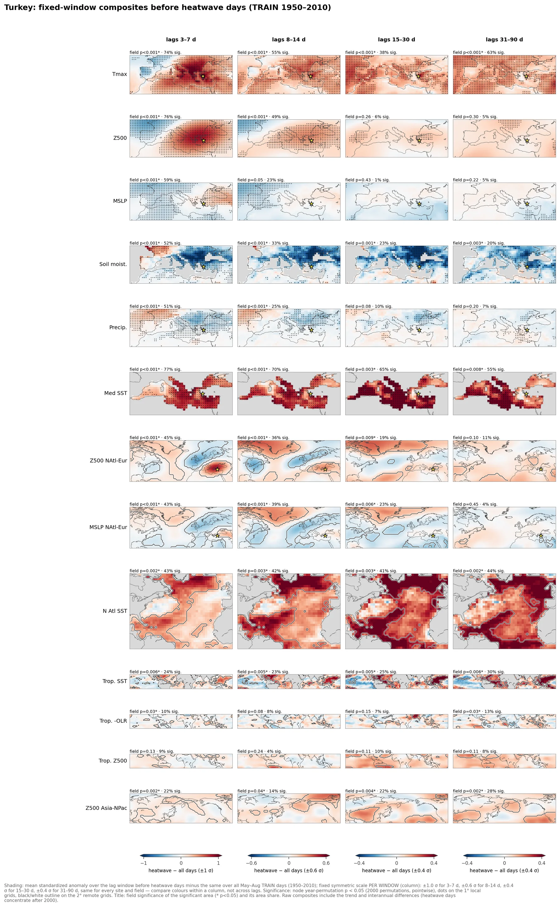
About this figure
Rows are 6 local and 7 remote fields and columns are lag windows of 3–7, 8–14, 15–30 and 31–90 d before Turkey's heatwave days; shading is the mean standardized anomaly over the window minus the same over all May–Aug train days on a fixed scale per column (±1.0, ±0.6, ±0.4, ±0.4 σ), and raw composites include the trend and interannual differences. Dots (1° local grids) or outlines (2° remote grids) mark year-permutation p < 0.05, panel headers give field significance and significant area share, and the star marks the site. Fields with field significance (p < 0.05): 12 of 13 at 3–7 d, 10 at 8–14 d, 8 at 15–30 d and 7 at 31–90 d.
general/figuras/05a_atlas_site/Turquia.png
Syria: raw fixed-window composites, 13 fields × 4 windows (train 1950–2010)
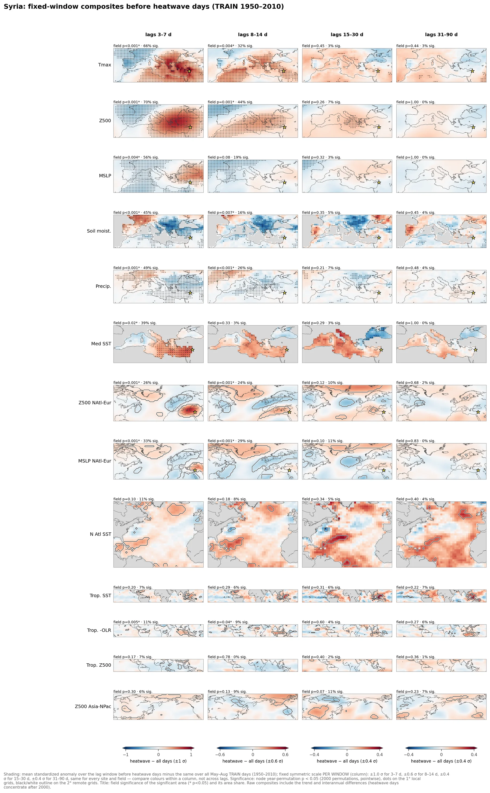
About this figure
Rows are 6 local and 7 remote fields and columns are lag windows of 3–7, 8–14, 15–30 and 31–90 d before Syria's heatwave days; shading is the mean standardized anomaly over the window minus the same over all May–Aug train days on a fixed scale per column (±1.0, ±0.6, ±0.4, ±0.4 σ), and raw composites include the trend and interannual differences. Dots (1° local grids) or outlines (2° remote grids) mark year-permutation p < 0.05, panel headers give field significance and significant area share, and the star marks the site. Fields with field significance (p < 0.05): 9 of 13 at 3–7 d, 7 at 8–14 d, 0 at 15–30 d and 0 at 31–90 d.
general/figuras/05a_atlas_site/Siria.png
Egypt: raw fixed-window composites, 13 fields × 4 windows (train 1950–2010)
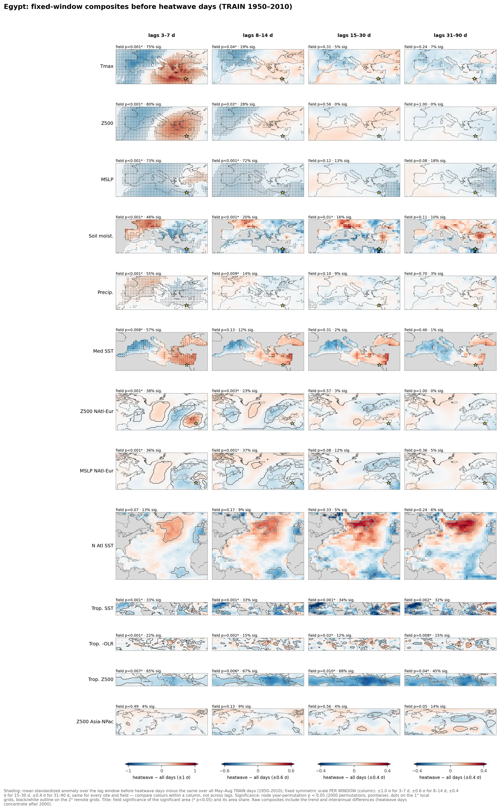
About this figure
Rows are 6 local and 7 remote fields and columns are lag windows of 3–7, 8–14, 15–30 and 31–90 d before Egypt's heatwave days; shading is the mean standardized anomaly over the window minus the same over all May–Aug train days on a fixed scale per column (±1.0, ±0.6, ±0.4, ±0.4 σ), and raw composites include the trend and interannual differences. Dots (1° local grids) or outlines (2° remote grids) mark year-permutation p < 0.05, panel headers give field significance and significant area share, and the star marks the site. Fields with field significance (p < 0.05): 11 of 13 at 3–7 d, 10 at 8–14 d, 4 at 15–30 d and 3 at 31–90 d.
general/figuras/05a_atlas_site/Egipto.png
Libya: raw fixed-window composites, 13 fields × 4 windows (train 1950–2010)
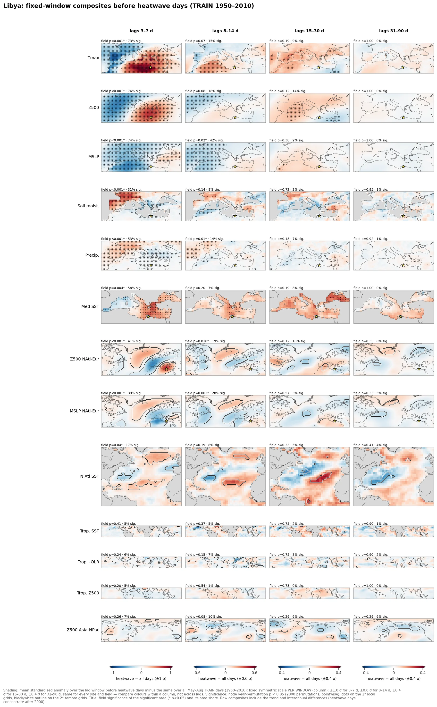
About this figure
Rows are 6 local and 7 remote fields and columns are lag windows of 3–7, 8–14, 15–30 and 31–90 d before Libya's heatwave days; shading is the mean standardized anomaly over the window minus the same over all May–Aug train days on a fixed scale per column (±1.0, ±0.6, ±0.4, ±0.4 σ), and raw composites include the trend and interannual differences. Dots (1° local grids) or outlines (2° remote grids) mark year-permutation p < 0.05, panel headers give field significance and significant area share, and the star marks the site. Fields with field significance (p < 0.05): 9 of 13 at 3–7 d, 4 at 8–14 d, 0 at 15–30 d and 0 at 31–90 d.
general/figuras/05a_atlas_site/Libia.png
Tunisia: raw fixed-window composites, 13 fields × 4 windows (train 1950–2010)
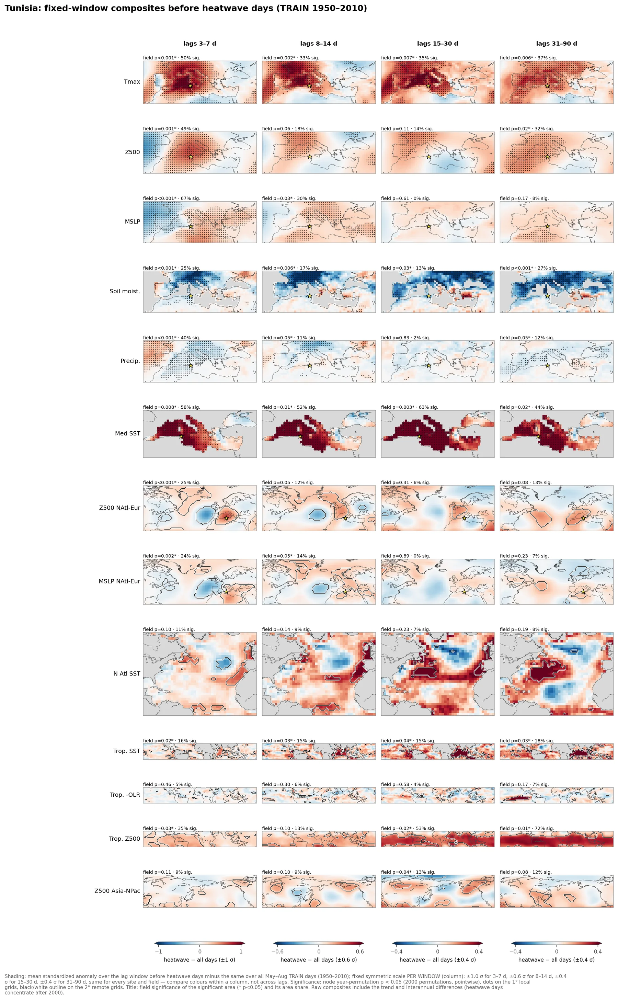
About this figure
Rows are 6 local and 7 remote fields and columns are lag windows of 3–7, 8–14, 15–30 and 31–90 d before Tunisia's heatwave days; shading is the mean standardized anomaly over the window minus the same over all May–Aug train days on a fixed scale per column (±1.0, ±0.6, ±0.4, ±0.4 σ), and raw composites include the trend and interannual differences. Dots (1° local grids) or outlines (2° remote grids) mark year-permutation p < 0.05, panel headers give field significance and significant area share, and the star marks the site. Fields with field significance (p < 0.05): 10 of 13 at 3–7 d, 7 at 8–14 d, 6 at 15–30 d and 7 at 31–90 d.
general/figuras/05a_atlas_site/Tunez.png
Algeria: raw fixed-window composites, 13 fields × 4 windows (train 1950–2010)
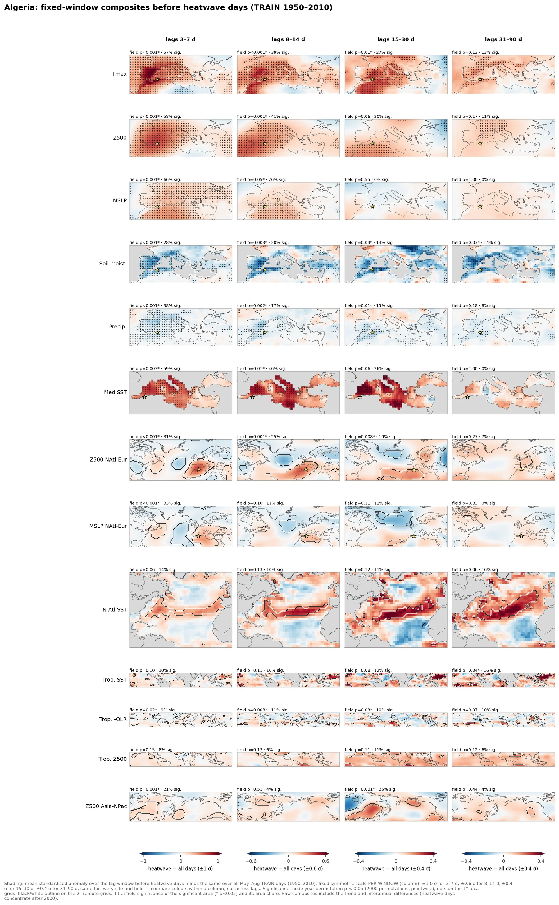
About this figure
Rows are 6 local and 7 remote fields and columns are lag windows of 3–7, 8–14, 15–30 and 31–90 d before Algeria's heatwave days; shading is the mean standardized anomaly over the window minus the same over all May–Aug train days on a fixed scale per column (±1.0, ±0.6, ±0.4, ±0.4 σ), and raw composites include the trend and interannual differences. Dots (1° local grids) or outlines (2° remote grids) mark year-permutation p < 0.05, panel headers give field significance and significant area share, and the star marks the site. Fields with field significance (p < 0.05): 10 of 13 at 3–7 d, 8 at 8–14 d, 6 at 15–30 d and 2 at 31–90 d.
general/figuras/05a_atlas_site/Argelia.png
Group-mean composites by field
Tmax (local): group-mean composites at four lag windows
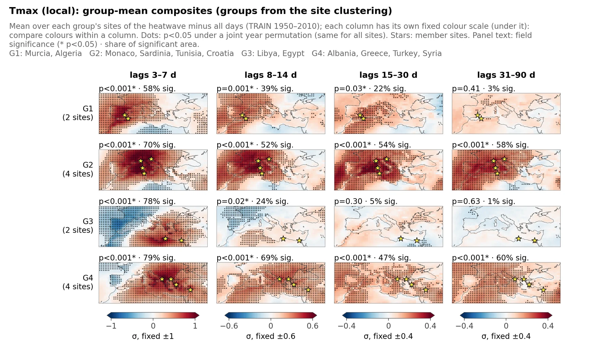
About this figure
Rows: site groups from the clustering (G1 Murcia, Algeria; G2 Monaco, Sardinia, Tunisia, Croatia; G3 Libya, Egypt; G4 Albania, Greece, Turkey, Syria); columns: lags 3–7, 8–14, 15–30 and 31–90 days. Each panel is the group mean of the Tmax composite (heatwave minus all May–Aug training days 1950–2010, σ) on a fixed scale per column (±1, ±0.6, ±0.4, ±0.4 σ), so compare colours within a column; dots mark p < 0.05 under a joint year permutation, stars mark member sites, and panel text gives field significance (* p < 0.05) and share of significant area.
general/figuras/slides/S05_groups/L_t2m_max.png
Z500 (local): group-mean composites at four lag windows
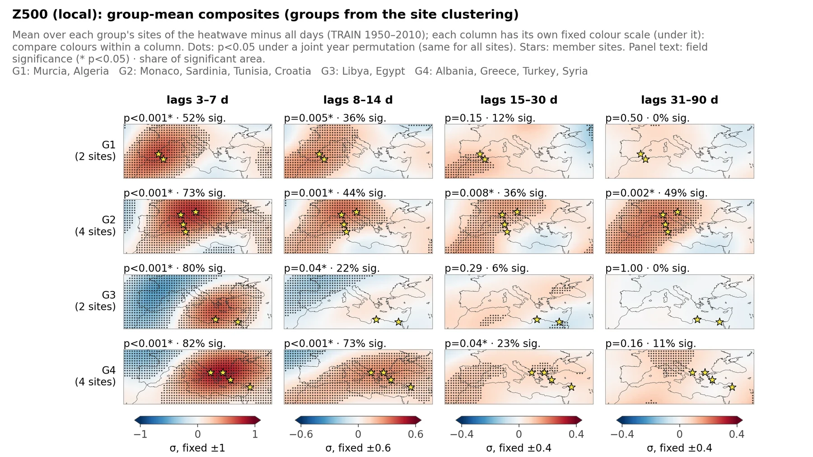
About this figure
Rows: site groups from the clustering (G1 Murcia, Algeria; G2 Monaco, Sardinia, Tunisia, Croatia; G3 Libya, Egypt; G4 Albania, Greece, Turkey, Syria); columns: lags 3–7, 8–14, 15–30 and 31–90 days. Each panel is the group mean of the Z500 composite (heatwave minus all May–Aug training days 1950–2010, σ) on a fixed scale per column (±1, ±0.6, ±0.4, ±0.4 σ), so compare colours within a column; dots mark p < 0.05 under a joint year permutation, stars mark member sites, and panel text gives field significance (* p < 0.05) and share of significant area.
general/figuras/slides/S05_groups/L_z500.png
MSLP (local): group-mean composites at four lag windows
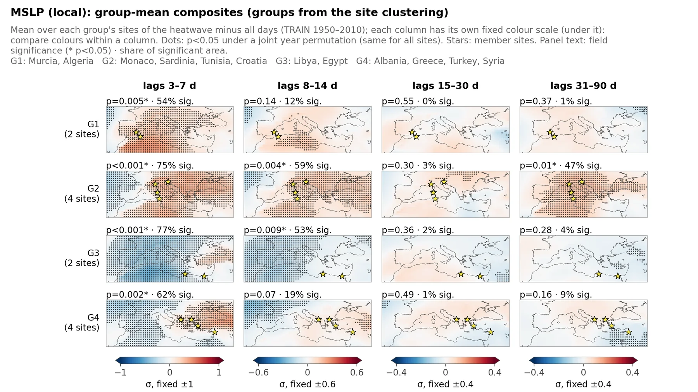
About this figure
Rows: site groups from the clustering (G1 Murcia, Algeria; G2 Monaco, Sardinia, Tunisia, Croatia; G3 Libya, Egypt; G4 Albania, Greece, Turkey, Syria); columns: lags 3–7, 8–14, 15–30 and 31–90 days. Each panel is the group mean of the MSLP composite (heatwave minus all May–Aug training days 1950–2010, σ) on a fixed scale per column (±1, ±0.6, ±0.4, ±0.4 σ), so compare colours within a column; dots mark p < 0.05 under a joint year permutation, stars mark member sites, and panel text gives field significance (* p < 0.05) and share of significant area.
general/figuras/slides/S05_groups/L_msl.png
Soil moisture L1 (local): group-mean composites at four lag windows
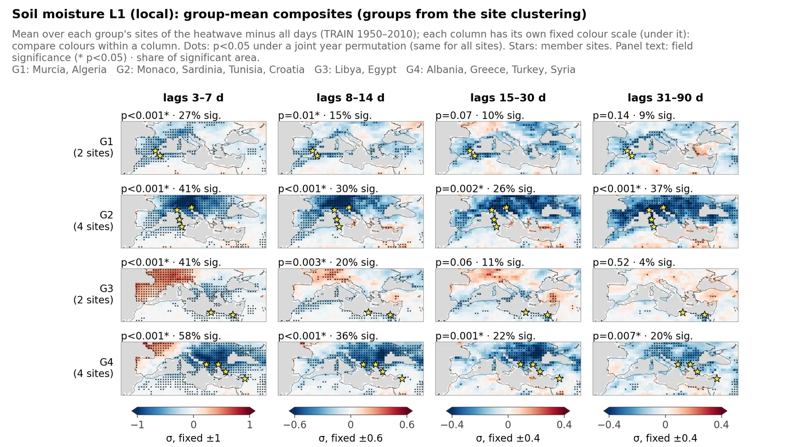
About this figure
Rows: site groups from the clustering (G1 Murcia, Algeria; G2 Monaco, Sardinia, Tunisia, Croatia; G3 Libya, Egypt; G4 Albania, Greece, Turkey, Syria); columns: lags 3–7, 8–14, 15–30 and 31–90 days. Each panel is the group mean of the soil moisture composite (heatwave minus all May–Aug training days 1950–2010, σ) on a fixed scale per column (±1, ±0.6, ±0.4, ±0.4 σ), so compare colours within a column; dots mark p < 0.05 under a joint year permutation, stars mark member sites, and panel text gives field significance (* p < 0.05) and share of significant area.
general/figuras/slides/S05_groups/L_sm1.png
Precipitation (local): group-mean composites at four lag windows
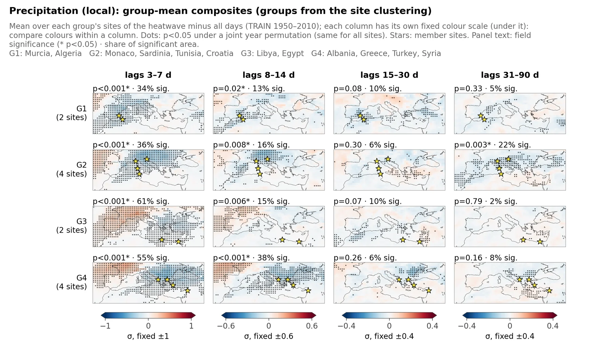
About this figure
Rows: site groups from the clustering (G1 Murcia, Algeria; G2 Monaco, Sardinia, Tunisia, Croatia; G3 Libya, Egypt; G4 Albania, Greece, Turkey, Syria); columns: lags 3–7, 8–14, 15–30 and 31–90 days. Each panel is the group mean of the precipitation composite (heatwave minus all May–Aug training days 1950–2010, σ) on a fixed scale per column (±1, ±0.6, ±0.4, ±0.4 σ), so compare colours within a column; dots mark p < 0.05 under a joint year permutation, stars mark member sites, and panel text gives field significance (* p < 0.05) and share of significant area.
general/figuras/slides/S05_groups/L_tp.png
Mediterranean SST: group-mean composites at four lag windows
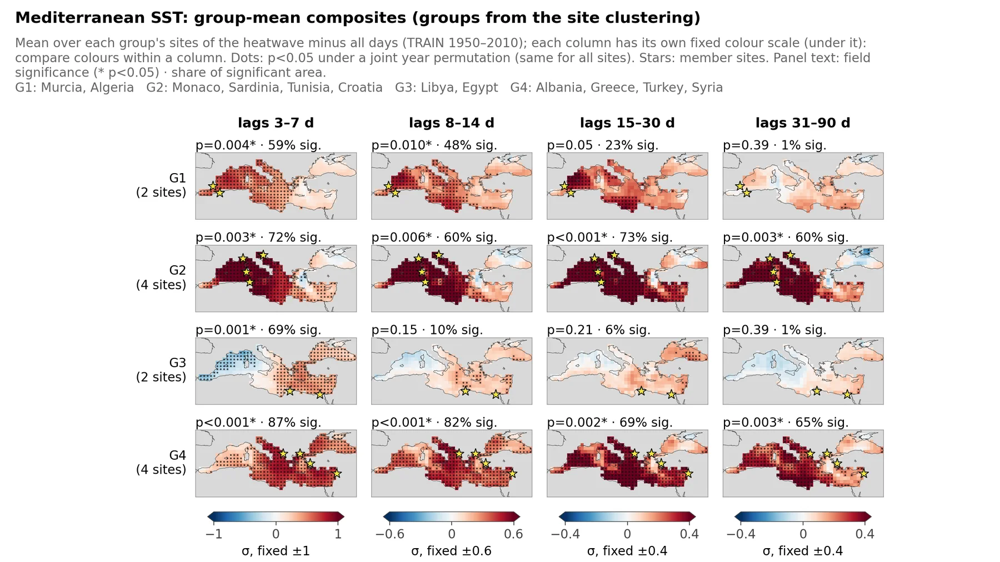
About this figure
Rows: site groups from the clustering (G1 Murcia, Algeria; G2 Monaco, Sardinia, Tunisia, Croatia; G3 Libya, Egypt; G4 Albania, Greece, Turkey, Syria); columns: lags 3–7, 8–14, 15–30 and 31–90 days. Each panel is the group mean of the Mediterranean SST composite (heatwave minus all May–Aug training days 1950–2010, σ) on a fixed scale per column (±1, ±0.6, ±0.4, ±0.4 σ), so compare colours within a column; dots mark p < 0.05 under a joint year permutation, stars mark member sites, and panel text gives field significance (* p < 0.05) and share of significant area.
general/figuras/slides/S05_groups/L_sstMed.png
Z500 N Atlantic-Europe: group-mean composites at four lag windows
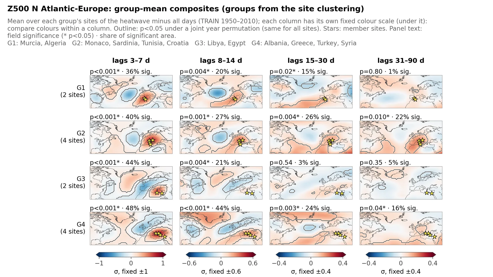
About this figure
Rows: site groups from the clustering (G1 Murcia, Algeria; G2 Monaco, Sardinia, Tunisia, Croatia; G3 Libya, Egypt; G4 Albania, Greece, Turkey, Syria); columns: lags 3–7, 8–14, 15–30 and 31–90 days. Each panel is the group mean of the Z500 N Atlantic-Europe composite (heatwave minus all May–Aug training days 1950–2010, σ) on a fixed scale per column (±1, ±0.6, ±0.4, ±0.4 σ), so compare colours within a column; black outlines mark p < 0.05 under a joint year permutation, stars mark member sites, and panel text gives field significance (* p < 0.05) and share of significant area.
general/figuras/slides/S05_groups/R_z500.png
MSLP N Atlantic-Europe: group-mean composites at four lag windows
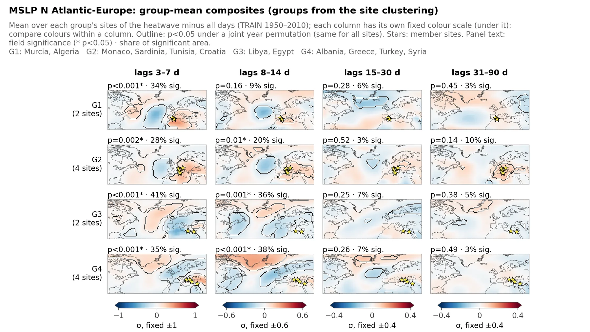
About this figure
Rows: site groups from the clustering (G1 Murcia, Algeria; G2 Monaco, Sardinia, Tunisia, Croatia; G3 Libya, Egypt; G4 Albania, Greece, Turkey, Syria); columns: lags 3–7, 8–14, 15–30 and 31–90 days. Each panel is the group mean of the MSLP N Atlantic-Europe composite (heatwave minus all May–Aug training days 1950–2010, σ) on a fixed scale per column (±1, ±0.6, ±0.4, ±0.4 σ), so compare colours within a column; black outlines mark p < 0.05 under a joint year permutation, stars mark member sites, and panel text gives field significance (* p < 0.05) and share of significant area.
general/figuras/slides/S05_groups/R_msl.png
N Atlantic SST: group-mean composites at four lag windows
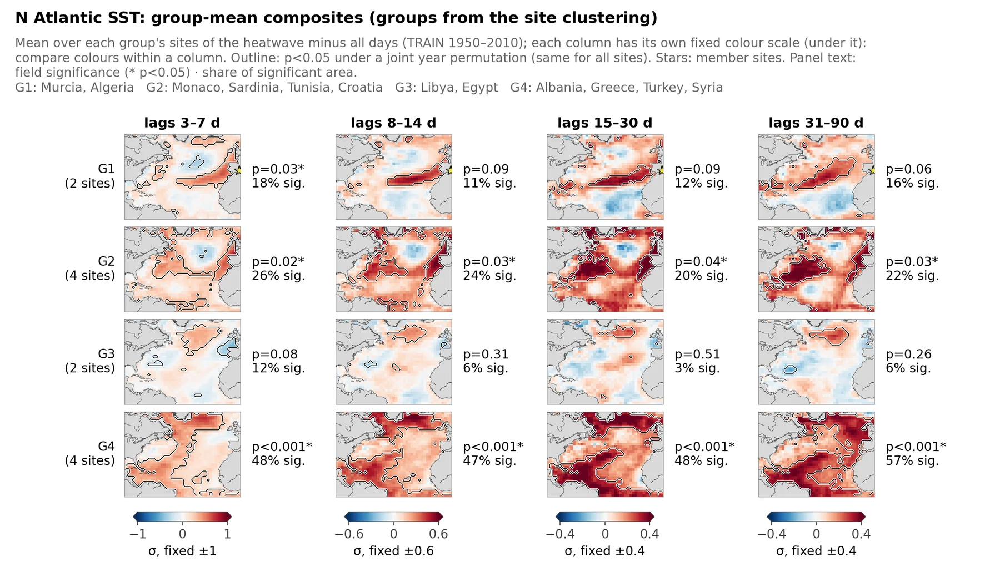
About this figure
Rows: site groups from the clustering (G1 Murcia, Algeria; G2 Monaco, Sardinia, Tunisia, Croatia; G3 Libya, Egypt; G4 Albania, Greece, Turkey, Syria); columns: lags 3–7, 8–14, 15–30 and 31–90 days. Each panel is the group mean of the N Atlantic SST composite (heatwave minus all May–Aug training days 1950–2010, σ) on a fixed scale per column (±1, ±0.6, ±0.4, ±0.4 σ), so compare colours within a column; black outlines mark p < 0.05 under a joint year permutation and text beside each panel gives field significance (* p < 0.05) and share of significant area. The domain barely reaches the Mediterranean, so the only star is Murcia's, on the eastern edge of the G1 panels.
general/figuras/slides/S05_groups/A_sst.png
Tropical SST: group-mean composites at four lag windows
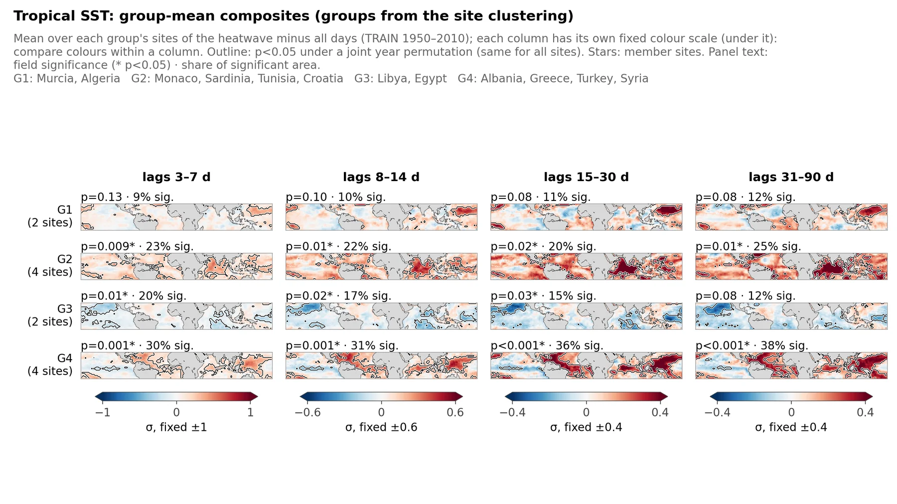
About this figure
Rows: site groups from the clustering (G1 Murcia, Algeria; G2 Monaco, Sardinia, Tunisia, Croatia; G3 Libya, Egypt; G4 Albania, Greece, Turkey, Syria); columns: lags 3–7, 8–14, 15–30 and 31–90 days. Each panel is the group mean of the tropical SST composite (heatwave minus all May–Aug training days 1950–2010, σ) on a fixed scale per column (±1, ±0.6, ±0.4, ±0.4 σ), so compare colours within a column; black outlines mark p < 0.05 under a joint year permutation and panel text gives field significance (* p < 0.05) and share of significant area. The sites lie outside this tropical domain, so no stars are drawn.
general/figuras/slides/S05_groups/T_sst.png
Tropical net TOA LW (= -OLR): group-mean composites at four lag windows
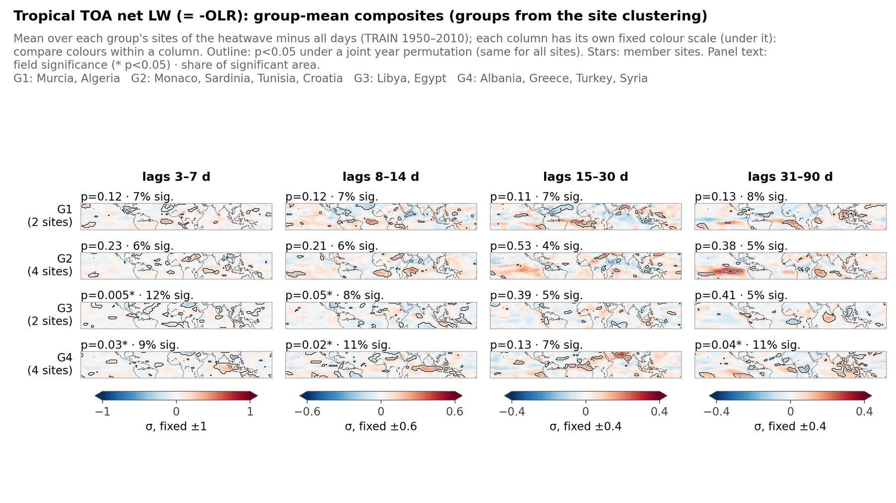
About this figure
Rows: site groups from the clustering (G1 Murcia, Algeria; G2 Monaco, Sardinia, Tunisia, Croatia; G3 Libya, Egypt; G4 Albania, Greece, Turkey, Syria); columns: lags 3–7, 8–14, 15–30 and 31–90 days. Each panel is the group mean of the tropical −OLR composite (heatwave minus all May–Aug training days 1950–2010, σ) on a fixed scale per column (±1, ±0.6, ±0.4, ±0.4 σ), so compare colours within a column; black outlines mark p < 0.05 under a joint year permutation and panel text gives field significance (* p < 0.05) and share of significant area. The sites lie outside this tropical domain, so no stars are drawn.
general/figuras/slides/S05_groups/T_olr.png
Tropical Z500: group-mean composites at four lag windows
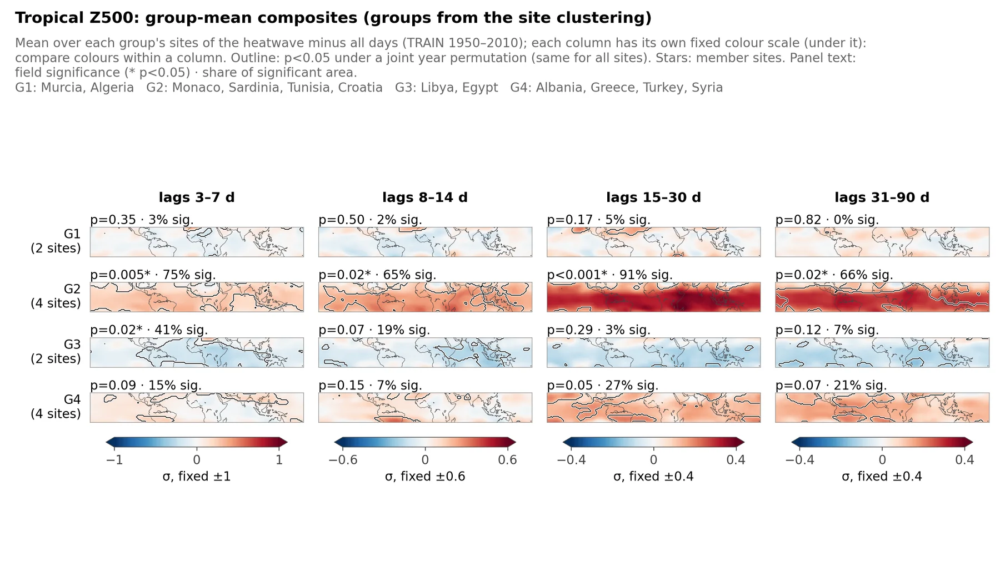
About this figure
Rows: site groups from the clustering (G1 Murcia, Algeria; G2 Monaco, Sardinia, Tunisia, Croatia; G3 Libya, Egypt; G4 Albania, Greece, Turkey, Syria); columns: lags 3–7, 8–14, 15–30 and 31–90 days. Each panel is the group mean of the tropical Z500 composite (heatwave minus all May–Aug training days 1950–2010, σ) on a fixed scale per column (±1, ±0.6, ±0.4, ±0.4 σ), so compare colours within a column; black outlines mark p < 0.05 under a joint year permutation and panel text gives field significance (* p < 0.05) and share of significant area. The sites lie outside this tropical domain, so no stars are drawn.
general/figuras/slides/S05_groups/T_z500.png
Z500 Asia-N Pacific: group-mean composites at four lag windows
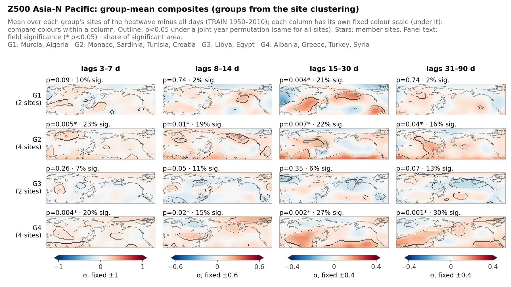
About this figure
Rows: site groups from the clustering (G1 Murcia, Algeria; G2 Monaco, Sardinia, Tunisia, Croatia; G3 Libya, Egypt; G4 Albania, Greece, Turkey, Syria); columns: lags 3–7, 8–14, 15–30 and 31–90 days. Each panel is the group mean of the Z500 Asia-N Pacific composite (heatwave minus all May–Aug training days 1950–2010, σ) on a fixed scale per column (±1, ±0.6, ±0.4, ±0.4 σ), so compare colours within a column; black outlines mark p < 0.05 under a joint year permutation and panel text gives field significance (* p < 0.05) and share of significant area. The sites lie outside this domain, so no stars are drawn.
general/figuras/slides/S05_groups/H_z500.png
Atlases by lag window (raw composites)
Lags 3–7 d: raw composites, 12 sites, local fields (train 1950–2010)
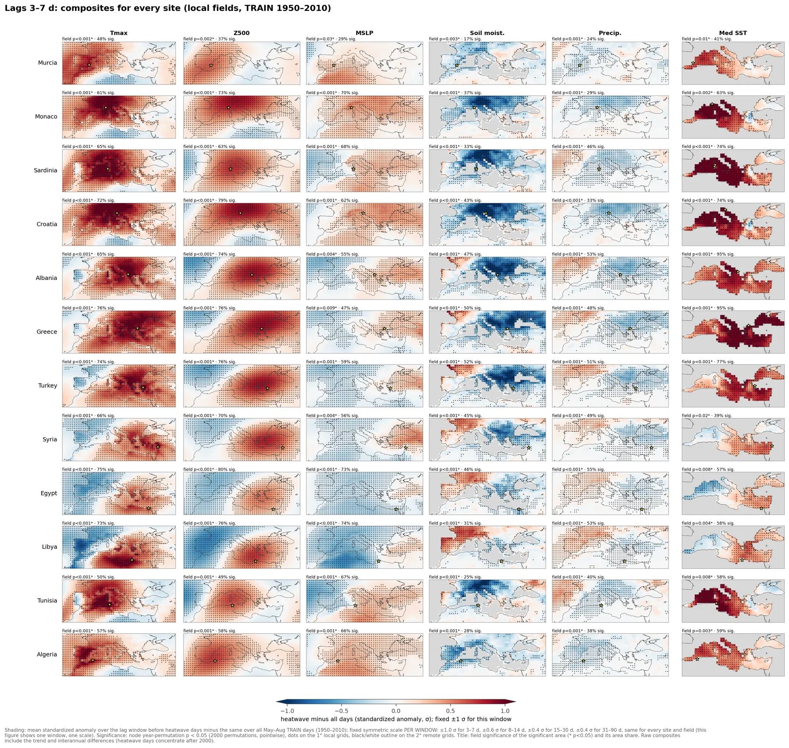
About this figure
Rows are the 12 sites and columns are Tmax, Z500, MSLP, soil moisture, precipitation and Mediterranean SST; shading is the mean standardized anomaly over lags 3–7 d before heatwave days minus the same over all May–Aug train days, on one fixed ±1σ scale. Dots mark year-permutation p < 0.05 and panel headers give field significance (* p < 0.05) and significant area share. All 12 sites have field-significant composites in each of the six local fields at this window.
general/figuras/05b_atlas_window/w03_07_local.png
Lags 3–7 d: raw composites, 12 sites, remote fields (train 1950–2010)
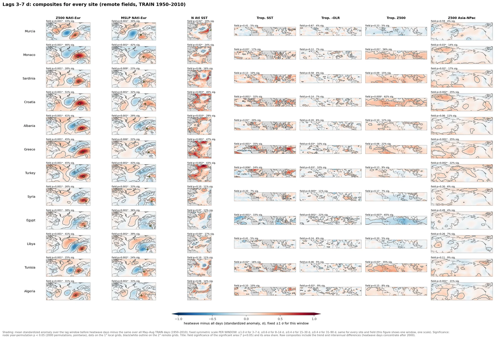
About this figure
Rows are the 12 sites and columns are Z500 and MSLP N Atlantic–Europe, N Atlantic SST, tropical SST, tropical −OLR, tropical Z500 and Z500 Asia–N Pacific; shading is the mean standardized anomaly over lags 3–7 d before heatwave days minus all May–Aug train days, on one fixed ±1σ scale. Outlines enclose the area with year-permutation p < 0.05 and panel headers give field significance and significant area share. Sites with field significance (of 12): Z500 N Atl–Eur 12, MSLP N Atl–Eur 12, N Atl SST 7, tropical SST 7, tropical −OLR 5, tropical Z500 4, Z500 Asia–N Pacific 6.
general/figuras/05b_atlas_window/w03_07_remote.png
Lags 8–14 d: raw composites, 12 sites, local fields (train 1950–2010)
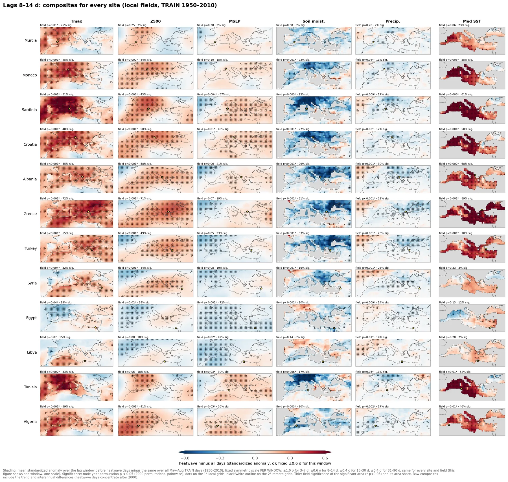
About this figure
Rows are the 12 sites and columns are Tmax, Z500, MSLP, soil moisture, precipitation and Mediterranean SST; shading is the mean standardized anomaly over lags 8–14 d before heatwave days minus all May–Aug train days, on one fixed ±0.6σ scale. Dots mark year-permutation p < 0.05 and panel headers give field significance and significant area share. Sites with field significance (of 12): Tmax 11, Z500 9, MSLP 6, soil moisture 10, precipitation 11, Mediterranean SST 8.
general/figuras/05b_atlas_window/w08_14_local.png
Lags 8–14 d: raw composites, 12 sites, remote fields (train 1950–2010)
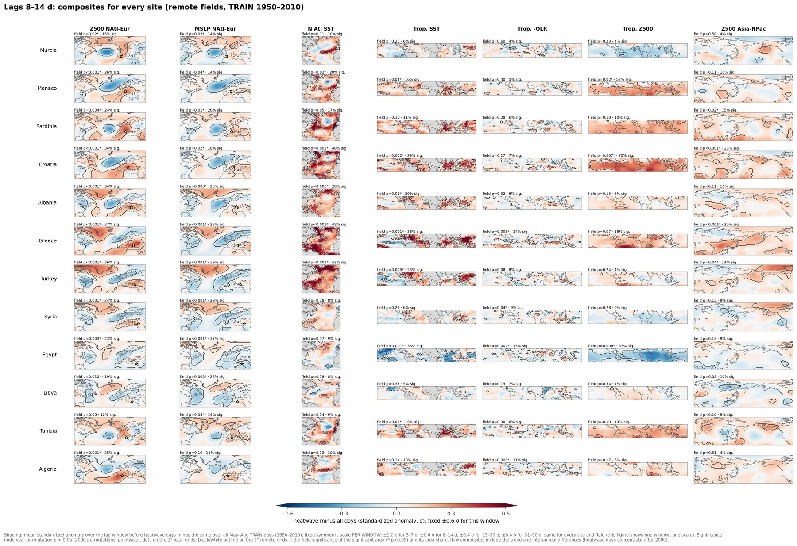
About this figure
Rows are the 12 sites and columns are Z500 and MSLP N Atlantic–Europe, N Atlantic SST, tropical SST, tropical −OLR, tropical Z500 and Z500 Asia–N Pacific; shading is the mean standardized anomaly over lags 8–14 d before heatwave days minus all May–Aug train days, on one fixed ±0.6σ scale. Outlines enclose the area with year-permutation p < 0.05 and panel headers give field significance and significant area share. Sites with field significance (of 12): Z500 N Atl–Eur 11, MSLP N Atl–Eur 11, N Atl SST 5, tropical SST 7, tropical −OLR 4, tropical Z500 3, Z500 Asia–N Pacific 4.
general/figuras/05b_atlas_window/w08_14_remote.png
Lags 15–30 d: raw composites, 12 sites, local fields (train 1950–2010)
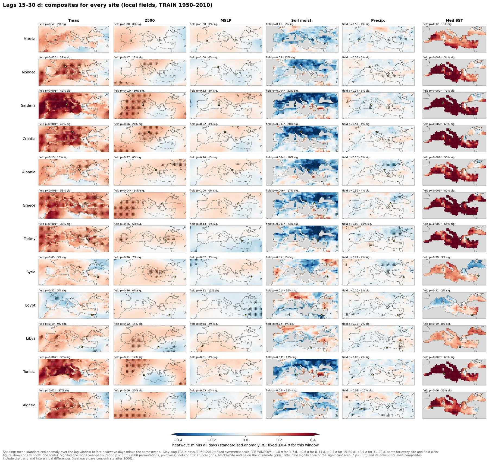
About this figure
Rows are the 12 sites and columns are Tmax, Z500, MSLP, soil moisture, precipitation and Mediterranean SST; shading is the mean standardized anomaly over lags 15–30 d before heatwave days minus all May–Aug train days, on one fixed ±0.4σ scale, and raw composites include the trend and interannual differences. Dots mark year-permutation p < 0.05 and panel headers give field significance and significant area share. Sites with field significance (of 12): Tmax 7, Z500 2, MSLP 0, soil moisture 8, precipitation 1, Mediterranean SST 7.
general/figuras/05b_atlas_window/w15_30_local.png
Lags 15–30 d: raw composites, 12 sites, remote fields (train 1950–2010)
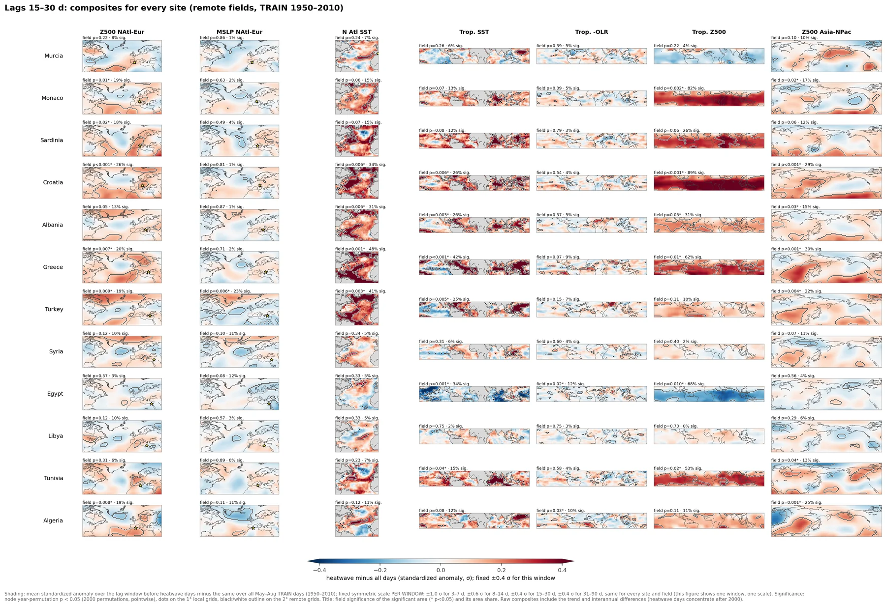
About this figure
Rows are the 12 sites and columns are Z500 and MSLP N Atlantic–Europe, N Atlantic SST, tropical SST, tropical −OLR, tropical Z500 and Z500 Asia–N Pacific; shading is the mean standardized anomaly over lags 15–30 d before heatwave days minus all May–Aug train days, on one fixed ±0.4σ scale. Outlines enclose the area with year-permutation p < 0.05 and panel headers give field significance and significant area share. Sites with field significance (of 12): Z500 N Atl–Eur 6, MSLP N Atl–Eur 1, N Atl SST 4, tropical SST 6, tropical −OLR 2, tropical Z500 6, Z500 Asia–N Pacific 7.
general/figuras/05b_atlas_window/w15_30_remote.png
Lags 31–90 d: raw composites, 12 sites, local fields (train 1950–2010)
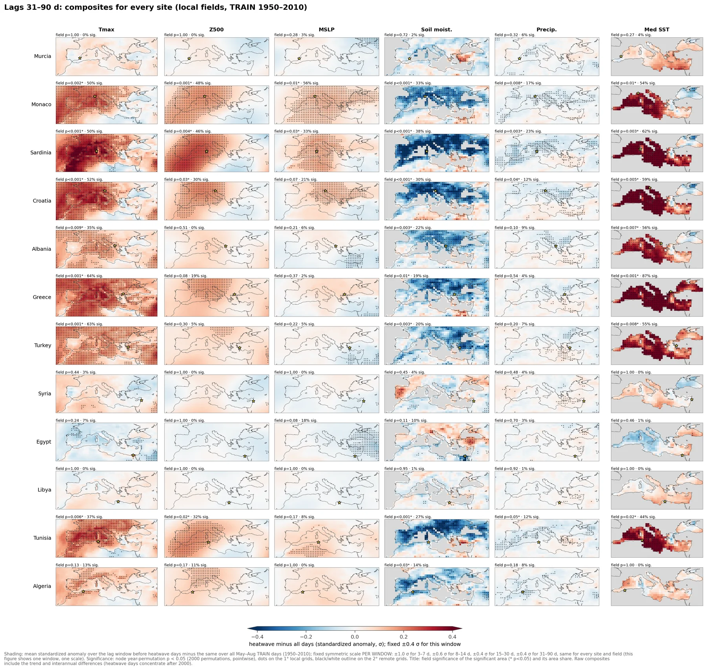
About this figure
Rows are the 12 sites and columns are Tmax, Z500, MSLP, soil moisture, precipitation and Mediterranean SST; shading is the mean standardized anomaly over lags 31–90 d before heatwave days minus all May–Aug train days, on one fixed ±0.4σ scale. Dots mark year-permutation p < 0.05 and panel headers give field significance and significant area share. Sites with field significance (of 12): Tmax 7, Z500 4, MSLP 2, soil moisture 8, precipitation 4, Mediterranean SST 7; in the within-year version Tmax, soil moisture and Mediterranean SST each drop to 1 site.
general/figuras/05b_atlas_window/w31_90_local.png
Lags 31–90 d: raw composites, 12 sites, remote fields (train 1950–2010)
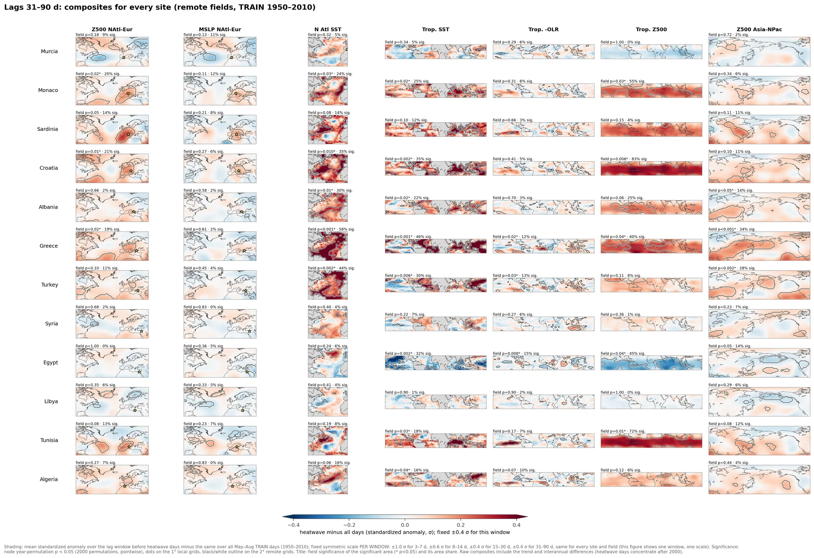
About this figure
Rows are the 12 sites and columns are Z500 and MSLP N Atlantic–Europe, N Atlantic SST, tropical SST, tropical −OLR, tropical Z500 and Z500 Asia–N Pacific; shading is the mean standardized anomaly over lags 31–90 d before heatwave days minus all May–Aug train days, on one fixed ±0.4σ scale, and outlines enclose the area with year-permutation p < 0.05. Sites with field significance (of 12): Z500 N Atl–Eur 3, MSLP N Atl–Eur 0, N Atl SST 5, tropical SST 8, tropical −OLR 3, tropical Z500 5, Z500 Asia–N Pacific 3. At the level of cluster means (all sites and windows), 122 of 288 remote-SST means are significant in raw composites but only 13 within year with the same sign, so the raw remote-SST signal is mostly trend or interannual differences.
general/figuras/05b_atlas_window/w31_90_remote.png
Group-mean SST composites on a single scale
Mediterranean SST: group-mean composites on one ±1 σ scale for all lags
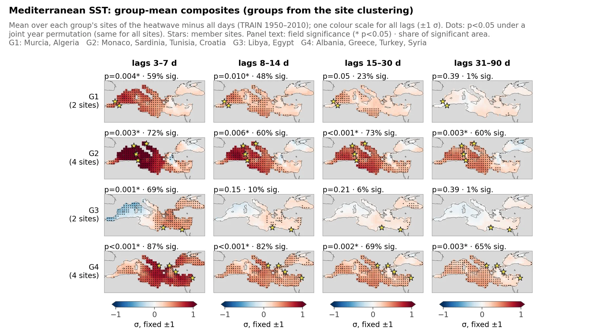
About this figure
The same group-mean Mediterranean SST composites as the per-column-scale version (groups G1–G4, lags 3–7, 8–14, 15–30, 31–90 d, train 1950–2010), drawn on a single ±1 σ scale for all four windows because raw SST composites saturate at the narrower scales. Dots mark p < 0.05 under a joint year permutation; stars mark member sites; panel text gives field significance and share of significant area.
general/figuras/slides/S05_groups/wide_L_sstMed.png
N Atlantic SST: group-mean composites on one ±1 σ scale for all lags
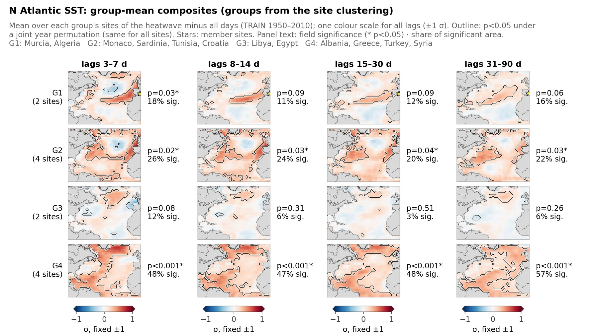
About this figure
The same group-mean N Atlantic SST composites as the per-column-scale version (groups G1–G4, lags 3–7, 8–14, 15–30, 31–90 d, train 1950–2010), drawn on a single ±1 σ scale for all four windows because raw SST composites saturate at the narrower scales. Black outlines mark p < 0.05 under a joint year permutation and text beside each panel gives field significance and share of significant area; the only star is Murcia's, on the eastern edge of the G1 panels.
general/figuras/slides/S05_groups/wide_A_sst.png
Tropical SST: group-mean composites on one ±1 σ scale for all lags
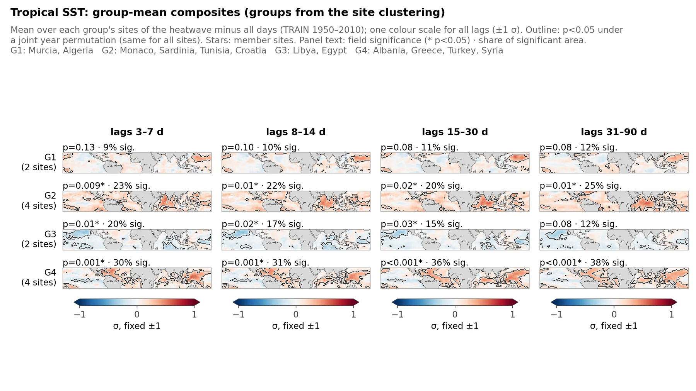
About this figure
The same group-mean tropical SST composites as the per-column-scale version (groups G1–G4, lags 3–7, 8–14, 15–30, 31–90 d, train 1950–2010), drawn on a single ±1 σ scale for all four windows because raw SST composites saturate at the narrower scales. Black outlines mark p < 0.05 under a joint year permutation and panel text gives field significance and share of significant area; the sites lie outside this domain, so no stars are drawn.
general/figuras/slides/S05_groups/wide_T_sst.png
Group-mean within-year composites
Tmax (local): group-mean within-year composites at four lag windows
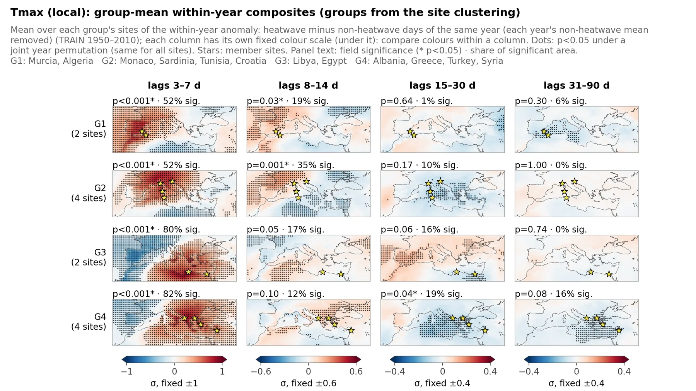
About this figure
Group means (G1–G4) of the within-year Tmax composite: heatwave days minus non-heatwave days of the same year, which removes the trend and differences between years (train 1950–2010). Columns: lags 3–7, 8–14, 15–30 and 31–90 days with fixed scales ±1, ±0.6, ±0.4 and ±0.4 σ; dots mark p < 0.05 under a joint year permutation, stars mark member sites, and panel text gives field significance (* p < 0.05) and share of significant area.
general/figuras/slides/S05_groups/wy_L_t2m_max.png
Z500 (local): group-mean within-year composites at four lag windows
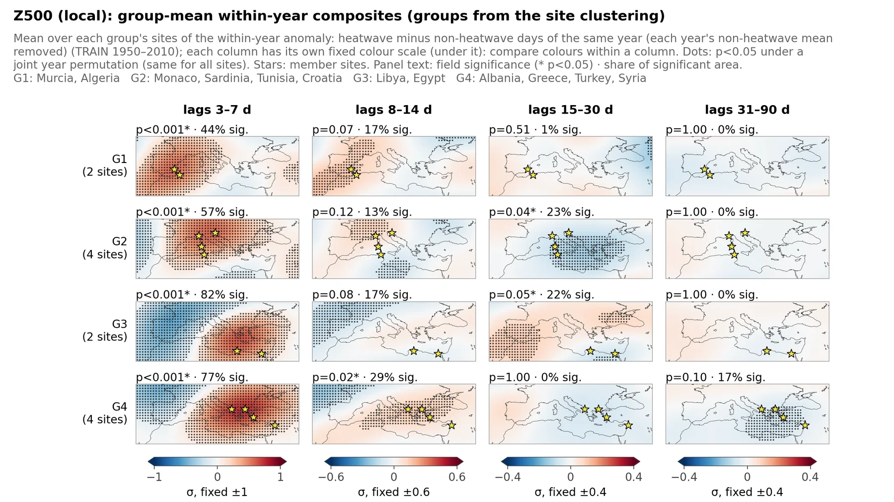
About this figure
Group means (G1–G4) of the within-year Z500 composite: heatwave days minus non-heatwave days of the same year, which removes the trend and differences between years (train 1950–2010). Columns: lags 3–7, 8–14, 15–30 and 31–90 days with fixed scales ±1, ±0.6, ±0.4 and ±0.4 σ; dots mark p < 0.05 under a joint year permutation, stars mark member sites, and panel text gives field significance (* p < 0.05) and share of significant area.
general/figuras/slides/S05_groups/wy_L_z500.png
MSLP (local): group-mean within-year composites at four lag windows
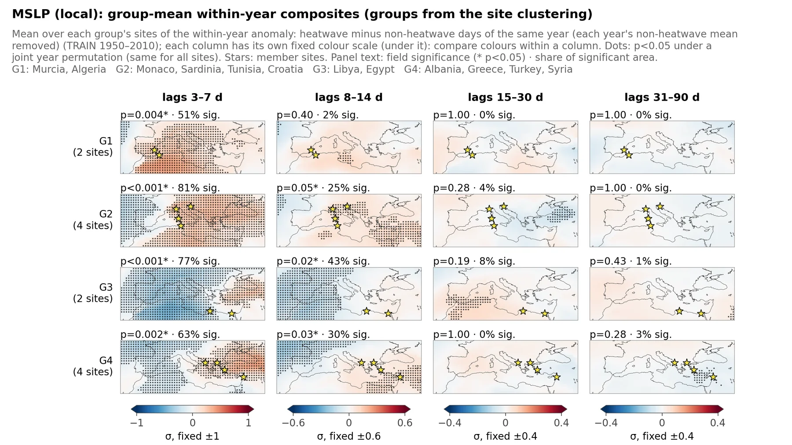
About this figure
Group means (G1–G4) of the within-year MSLP composite: heatwave days minus non-heatwave days of the same year, which removes the trend and differences between years (train 1950–2010). Columns: lags 3–7, 8–14, 15–30 and 31–90 days with fixed scales ±1, ±0.6, ±0.4 and ±0.4 σ; dots mark p < 0.05 under a joint year permutation, stars mark member sites, and panel text gives field significance (* p < 0.05) and share of significant area.
general/figuras/slides/S05_groups/wy_L_msl.png
Soil moisture L1 (local): group-mean within-year composites at four lag windows
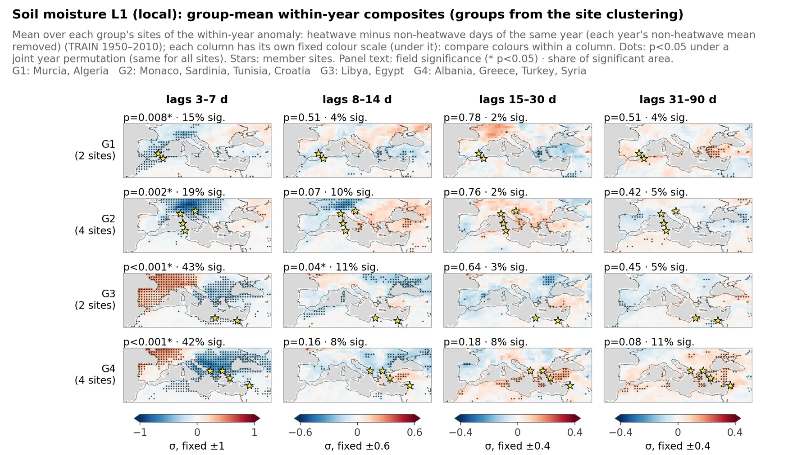
About this figure
Group means (G1–G4) of the within-year soil moisture composite: heatwave days minus non-heatwave days of the same year, which removes the trend and differences between years (train 1950–2010). Columns: lags 3–7, 8–14, 15–30 and 31–90 days with fixed scales ±1, ±0.6, ±0.4 and ±0.4 σ; dots mark p < 0.05 under a joint year permutation, stars mark member sites, and panel text gives field significance (* p < 0.05) and share of significant area.
general/figuras/slides/S05_groups/wy_L_sm1.png
Precipitation (local): group-mean within-year composites at four lag windows
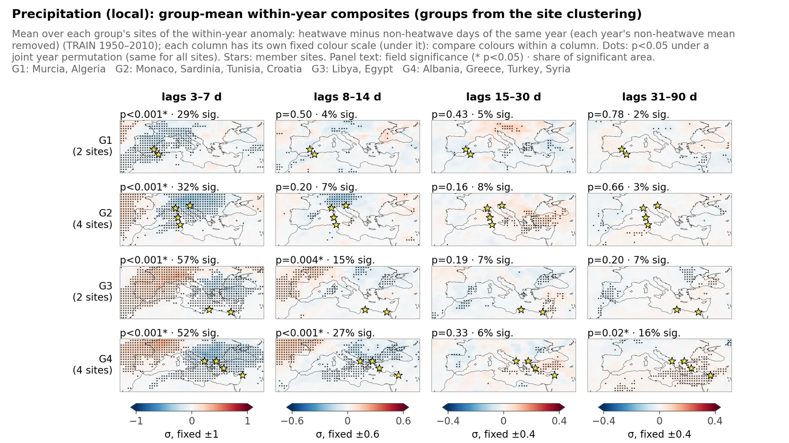
About this figure
Group means (G1–G4) of the within-year precipitation composite: heatwave days minus non-heatwave days of the same year, which removes the trend and differences between years (train 1950–2010). Columns: lags 3–7, 8–14, 15–30 and 31–90 days with fixed scales ±1, ±0.6, ±0.4 and ±0.4 σ; dots mark p < 0.05 under a joint year permutation, stars mark member sites, and panel text gives field significance (* p < 0.05) and share of significant area.
general/figuras/slides/S05_groups/wy_L_tp.png
Mediterranean SST: group-mean within-year composites at four lag windows
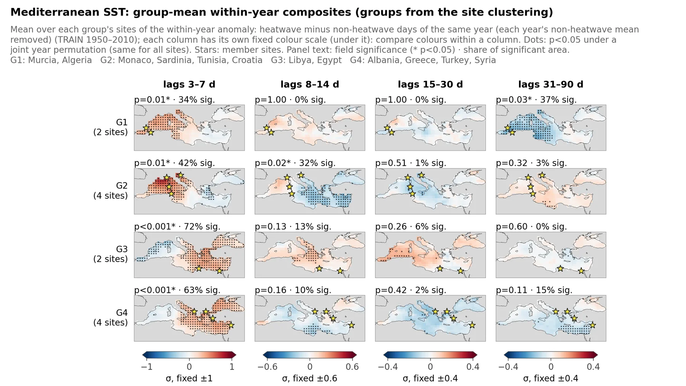
About this figure
Group means (G1–G4) of the within-year Mediterranean SST composite: heatwave days minus non-heatwave days of the same year, which removes the trend and differences between years (train 1950–2010). Columns: lags 3–7, 8–14, 15–30 and 31–90 days with fixed scales ±1, ±0.6, ±0.4 and ±0.4 σ; dots mark p < 0.05 under a joint year permutation, stars mark member sites, and panel text gives field significance (* p < 0.05) and share of significant area.
general/figuras/slides/S05_groups/wy_L_sstMed.png
Lags 3–7 d: all 12 sites, one field per slide
Tmax (local), lags 3–7 d: composites at all 12 sites
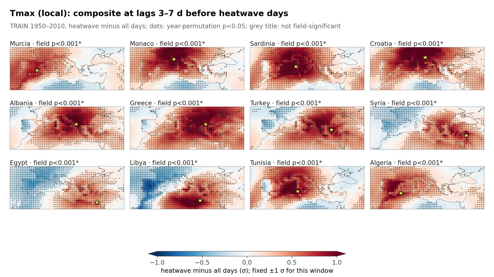
About this figure
One panel per site (named in the panel title, site marked by a yellow star): mean standardized anomaly over lags 3–7 days before heatwave days minus the same over all May–Aug training days (1950–2010), on a fixed ±1 σ scale shared by all sites and fields at this window. Dots mark year-permutation p < 0.05; a grey panel title means not field-significant. Field-significant (p < 0.05) at 12 of 12 sites.
general/figuras/slides/S05_sites/w03_07_L_t2m_max.png
Z500 (local), lags 3–7 d: composites at all 12 sites
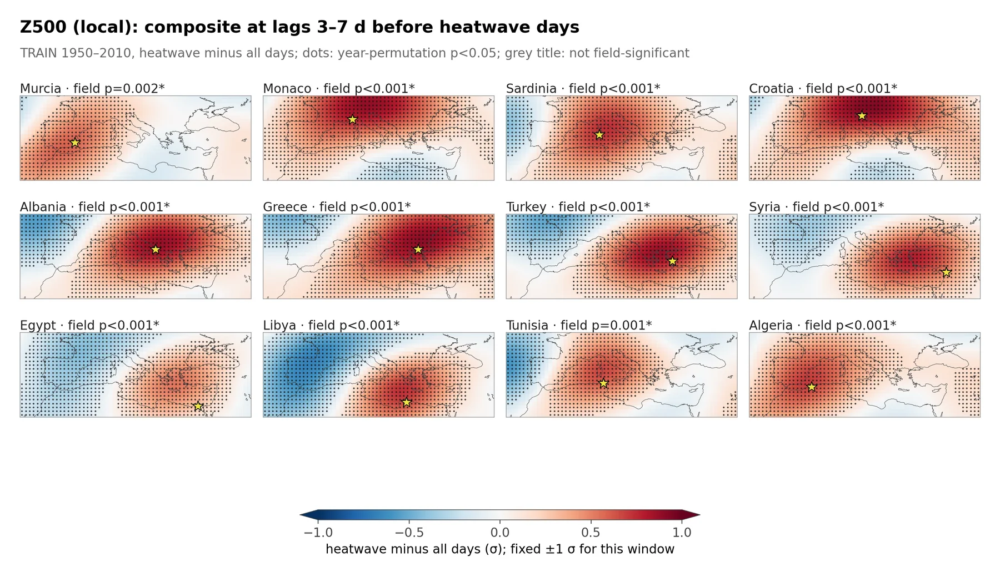
About this figure
One panel per site (named in the panel title, site marked by a yellow star): mean standardized anomaly over lags 3–7 days before heatwave days minus the same over all May–Aug training days (1950–2010), on a fixed ±1 σ scale shared by all sites and fields at this window. Dots mark year-permutation p < 0.05; a grey panel title means not field-significant. Field-significant (p < 0.05) at 12 of 12 sites.
general/figuras/slides/S05_sites/w03_07_L_z500.png
MSLP (local), lags 3–7 d: composites at all 12 sites
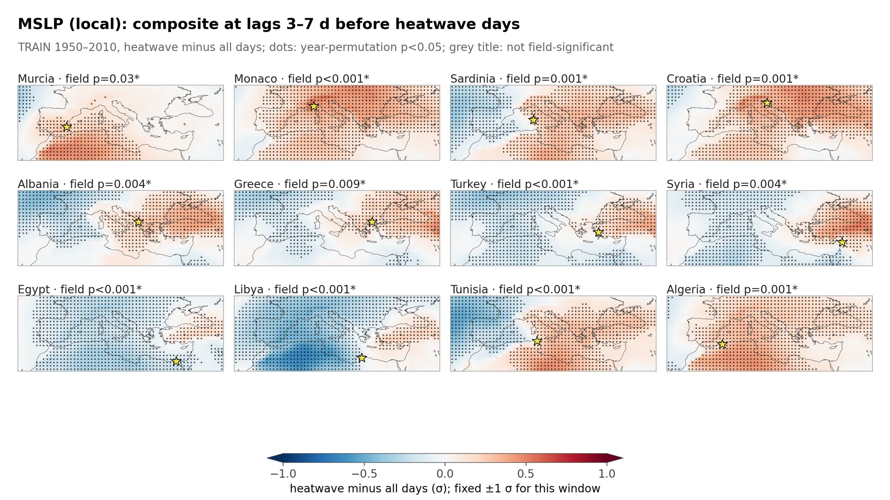
About this figure
One panel per site (named in the panel title, site marked by a yellow star): mean standardized anomaly over lags 3–7 days before heatwave days minus the same over all May–Aug training days (1950–2010), on a fixed ±1 σ scale shared by all sites and fields at this window. Dots mark year-permutation p < 0.05; a grey panel title means not field-significant. Field-significant (p < 0.05) at 12 of 12 sites.
general/figuras/slides/S05_sites/w03_07_L_msl.png
Soil moisture L1 (local), lags 3–7 d: composites at all 12 sites
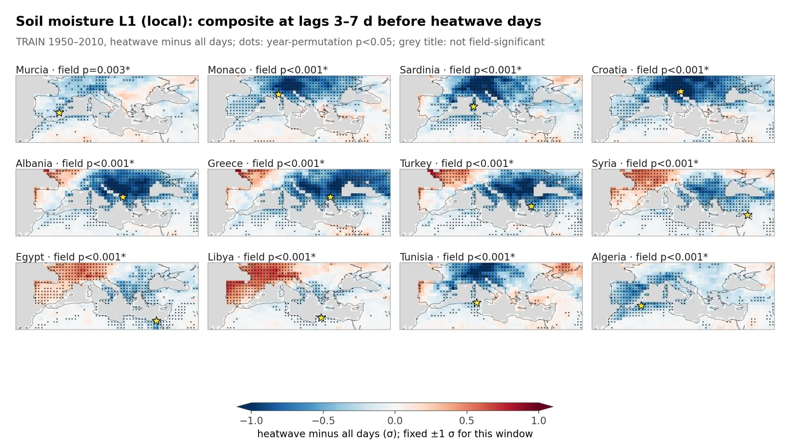
About this figure
One panel per site (named in the panel title, site marked by a yellow star): mean standardized anomaly over lags 3–7 days before heatwave days minus the same over all May–Aug training days (1950–2010), on a fixed ±1 σ scale shared by all sites and fields at this window. Dots mark year-permutation p < 0.05; a grey panel title means not field-significant. Field-significant (p < 0.05) at 12 of 12 sites.
general/figuras/slides/S05_sites/w03_07_L_sm1.png
Precipitation (local), lags 3–7 d: composites at all 12 sites
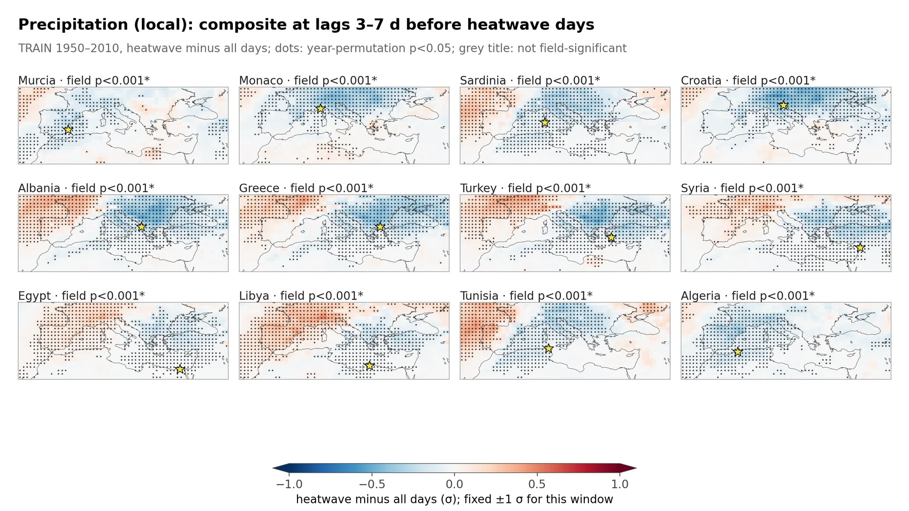
About this figure
One panel per site (named in the panel title, site marked by a yellow star): mean standardized anomaly over lags 3–7 days before heatwave days minus the same over all May–Aug training days (1950–2010), on a fixed ±1 σ scale shared by all sites and fields at this window. Dots mark year-permutation p < 0.05; a grey panel title means not field-significant. Field-significant (p < 0.05) at 12 of 12 sites.
general/figuras/slides/S05_sites/w03_07_L_tp.png
Mediterranean SST, lags 3–7 d: composites at all 12 sites
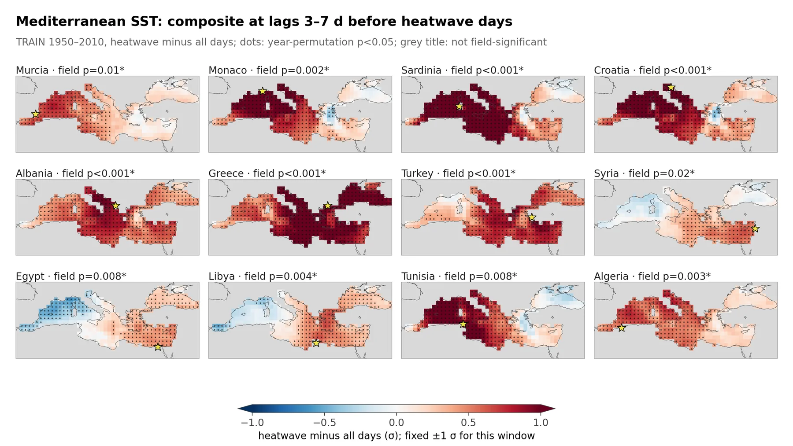
About this figure
One panel per site (named in the panel title, site marked by a yellow star): mean standardized anomaly over lags 3–7 days before heatwave days minus the same over all May–Aug training days (1950–2010), on a fixed ±1 σ scale shared by all sites and fields at this window. Dots mark year-permutation p < 0.05; a grey panel title means not field-significant. Field-significant (p < 0.05) at 12 of 12 sites.
general/figuras/slides/S05_sites/w03_07_L_sstMed.png
Z500 N Atlantic-Europe, lags 3–7 d: composites at all 12 sites
About this figure
One panel per site (named in the panel title, site marked by a yellow star): mean standardized anomaly over lags 3–7 days before heatwave days minus the same over all May–Aug training days (1950–2010), on a fixed ±1 σ scale shared by all sites and fields at this window. Black outlines enclose areas with year-permutation p < 0.05; a grey panel title means not field-significant. Field-significant (p < 0.05) at 12 of 12 sites.
general/figuras/slides/S05_sites/w03_07_R_z500.png
MSLP N Atlantic-Europe, lags 3–7 d: composites at all 12 sites
About this figure
One panel per site (named in the panel title, site marked by a yellow star): mean standardized anomaly over lags 3–7 days before heatwave days minus the same over all May–Aug training days (1950–2010), on a fixed ±1 σ scale shared by all sites and fields at this window. Black outlines enclose areas with year-permutation p < 0.05; a grey panel title means not field-significant. Field-significant (p < 0.05) at 12 of 12 sites.
general/figuras/slides/S05_sites/w03_07_R_msl.png
N Atlantic SST, lags 3–7 d: composites at all 12 sites
About this figure
One panel per site, named in the panel title (the domain barely reaches the Mediterranean, so only Murcia's panel shows a star, on its eastern edge): mean standardized anomaly over lags 3–7 days before heatwave days minus the same over all May–Aug training days (1950–2010), on a fixed ±1 σ scale shared by all sites and fields at this window. Black outlines enclose areas with year-permutation p < 0.05; a grey panel title means not field-significant. Field-significant (p < 0.05) at 7 of 12 sites.
general/figuras/slides/S05_sites/w03_07_A_sst.png
Tropical SST, lags 3–7 d: composites at all 12 sites
About this figure
One panel per site, named in the panel title (the sites lie outside this tropical domain, so no star is drawn): mean standardized anomaly over lags 3–7 days before heatwave days minus the same over all May–Aug training days (1950–2010), on a fixed ±1 σ scale shared by all sites and fields at this window. Black outlines enclose areas with year-permutation p < 0.05; a grey panel title means not field-significant. Field-significant (p < 0.05) at 7 of 12 sites.
general/figuras/slides/S05_sites/w03_07_T_sst.png
Tropical net TOA LW (= -OLR), lags 3–7 d: composites at all 12 sites
About this figure
One panel per site, named in the panel title (the sites lie outside this tropical domain, so no star is drawn): mean standardized anomaly over lags 3–7 days before heatwave days minus the same over all May–Aug training days (1950–2010), on a fixed ±1 σ scale shared by all sites and fields at this window. Black outlines enclose areas with year-permutation p < 0.05; a grey panel title means not field-significant. Field-significant (p < 0.05) at 5 of 12 sites.
general/figuras/slides/S05_sites/w03_07_T_olr.png
Tropical Z500, lags 3–7 d: composites at all 12 sites
About this figure
One panel per site, named in the panel title (the sites lie outside this tropical domain, so no star is drawn): mean standardized anomaly over lags 3–7 days before heatwave days minus the same over all May–Aug training days (1950–2010), on a fixed ±1 σ scale shared by all sites and fields at this window. Black outlines enclose areas with year-permutation p < 0.05; a grey panel title means not field-significant. Field-significant (p < 0.05) at 4 of 12 sites.
general/figuras/slides/S05_sites/w03_07_T_z500.png
Z500 Asia-N Pacific, lags 3–7 d: composites at all 12 sites
About this figure
One panel per site, named in the panel title (the sites lie outside this domain, so no star is drawn): mean standardized anomaly over lags 3–7 days before heatwave days minus the same over all May–Aug training days (1950–2010), on a fixed ±1 σ scale shared by all sites and fields at this window. Black outlines enclose areas with year-permutation p < 0.05; a grey panel title means not field-significant. Field-significant (p < 0.05) at 6 of 12 sites.
general/figuras/slides/S05_sites/w03_07_H_z500.png
Within-year atlases by site (local fields)
Murcia: within-year pre-heatwave composites, 6 local fields (train 1950–2010)
About this figure
Same layout as the raw site atlas, restricted to the six local fields: each composite is heatwave days minus non-heatwave days of the same year (each year's non-heatwave mean removed), which removes the trend and interannual variability, including genuine interannual precursors, on a fixed scale per column (±1.0, ±0.6, ±0.4, ±0.4 σ). Dots mark year-permutation p < 0.05, panel headers give field significance and significant area share, and the star marks the site. Local fields with within-year field significance (p < 0.05): 5 of 6 at 3–7 d, 0 at 8–14 d, 0 at 15–30 d and 0 at 31–90 d.
general/figuras/05a_atlas_site/wy_Murcia.png
Monaco: within-year pre-heatwave composites, 6 local fields (train 1950–2010)
About this figure
Same layout as the raw site atlas, restricted to the six local fields: each composite is heatwave days minus non-heatwave days of the same year (each year's non-heatwave mean removed), which removes the trend and interannual variability, including genuine interannual precursors, on a fixed scale per column (±1.0, ±0.6, ±0.4, ±0.4 σ). Dots mark year-permutation p < 0.05, panel headers give field significance and significant area share, and the star marks the site. Local fields with within-year field significance (p < 0.05): 6 of 6 at 3–7 d, 0 at 8–14 d, 0 at 15–30 d and 0 at 31–90 d.
general/figuras/05a_atlas_site/wy_Monaco.png
Sardinia: within-year pre-heatwave composites, 6 local fields (train 1950–2010)
About this figure
Same layout as the raw site atlas, restricted to the six local fields: each composite is heatwave days minus non-heatwave days of the same year (each year's non-heatwave mean removed), which removes the trend and interannual variability, including genuine interannual precursors, on a fixed scale per column (±1.0, ±0.6, ±0.4, ±0.4 σ). Dots mark year-permutation p < 0.05, panel headers give field significance and significant area share, and the star marks the site. Local fields with within-year field significance (p < 0.05): 6 of 6 at 3–7 d, 3 at 8–14 d, 1 at 15–30 d and 1 at 31–90 d.
general/figuras/05a_atlas_site/wy_Cerdenia.png
Croatia: within-year pre-heatwave composites, 6 local fields (train 1950–2010)
About this figure
Same layout as the raw site atlas, restricted to the six local fields: each composite is heatwave days minus non-heatwave days of the same year (each year's non-heatwave mean removed), which removes the trend and interannual variability, including genuine interannual precursors, on a fixed scale per column (±1.0, ±0.6, ±0.4, ±0.4 σ). Dots mark year-permutation p < 0.05, panel headers give field significance and significant area share, and the star marks the site. Local fields with within-year field significance (p < 0.05): 5 of 6 at 3–7 d, 2 at 8–14 d, 1 at 15–30 d and 0 at 31–90 d.
general/figuras/05a_atlas_site/wy_Croacia.png
Albania: within-year pre-heatwave composites, 6 local fields (train 1950–2010)
About this figure
Same layout as the raw site atlas, restricted to the six local fields: each composite is heatwave days minus non-heatwave days of the same year (each year's non-heatwave mean removed), which removes the trend and interannual variability, including genuine interannual precursors, on a fixed scale per column (±1.0, ±0.6, ±0.4, ±0.4 σ). Dots mark year-permutation p < 0.05, panel headers give field significance and significant area share, and the star marks the site. Local fields with within-year field significance (p < 0.05): 6 of 6 at 3–7 d, 2 at 8–14 d, 2 at 15–30 d and 0 at 31–90 d.
general/figuras/05a_atlas_site/wy_Albania.png
Greece: within-year pre-heatwave composites, 6 local fields (train 1950–2010)
About this figure
Same layout as the raw site atlas, restricted to the six local fields: each composite is heatwave days minus non-heatwave days of the same year (each year's non-heatwave mean removed), which removes the trend and interannual variability, including genuine interannual precursors, on a fixed scale per column (±1.0, ±0.6, ±0.4, ±0.4 σ). Dots mark year-permutation p < 0.05, panel headers give field significance and significant area share, and the star marks the site. Local fields with within-year field significance (p < 0.05): 6 of 6 at 3–7 d, 4 at 8–14 d, 2 at 15–30 d and 4 at 31–90 d.
general/figuras/05a_atlas_site/wy_Grecia.png
Turkey: within-year pre-heatwave composites, 6 local fields (train 1950–2010)
About this figure
Same layout as the raw site atlas, restricted to the six local fields: each composite is heatwave days minus non-heatwave days of the same year (each year's non-heatwave mean removed), which removes the trend and interannual variability, including genuine interannual precursors, on a fixed scale per column (±1.0, ±0.6, ±0.4, ±0.4 σ). Dots mark year-permutation p < 0.05, panel headers give field significance and significant area share, and the star marks the site. Local fields with within-year field significance (p < 0.05): 6 of 6 at 3–7 d, 1 at 8–14 d, 0 at 15–30 d and 1 at 31–90 d.
general/figuras/05a_atlas_site/wy_Turquia.png
Syria: within-year pre-heatwave composites, 6 local fields (train 1950–2010)
About this figure
Same layout as the raw site atlas, restricted to the six local fields: each composite is heatwave days minus non-heatwave days of the same year (each year's non-heatwave mean removed), which removes the trend and interannual variability, including genuine interannual precursors, on a fixed scale per column (±1.0, ±0.6, ±0.4, ±0.4 σ). Dots mark year-permutation p < 0.05, panel headers give field significance and significant area share, and the star marks the site. Local fields with within-year field significance (p < 0.05): 6 of 6 at 3–7 d, 1 at 8–14 d, 0 at 15–30 d and 0 at 31–90 d.
general/figuras/05a_atlas_site/wy_Siria.png
Egypt: within-year pre-heatwave composites, 6 local fields (train 1950–2010)
About this figure
Same layout as the raw site atlas, restricted to the six local fields: each composite is heatwave days minus non-heatwave days of the same year (each year's non-heatwave mean removed), which removes the trend and interannual variability, including genuine interannual precursors, on a fixed scale per column (±1.0, ±0.6, ±0.4, ±0.4 σ). Dots mark year-permutation p < 0.05, panel headers give field significance and significant area share, and the star marks the site. Local fields with within-year field significance (p < 0.05): 6 of 6 at 3–7 d, 3 at 8–14 d, 0 at 15–30 d and 0 at 31–90 d.
general/figuras/05a_atlas_site/wy_Egipto.png
Libya: within-year pre-heatwave composites, 6 local fields (train 1950–2010)
About this figure
Same layout as the raw site atlas, restricted to the six local fields: each composite is heatwave days minus non-heatwave days of the same year (each year's non-heatwave mean removed), which removes the trend and interannual variability, including genuine interannual precursors, on a fixed scale per column (±1.0, ±0.6, ±0.4, ±0.4 σ). Dots mark year-permutation p < 0.05, panel headers give field significance and significant area share, and the star marks the site. Local fields with within-year field significance (p < 0.05): 6 of 6 at 3–7 d, 2 at 8–14 d, 1 at 15–30 d and 0 at 31–90 d.
general/figuras/05a_atlas_site/wy_Libia.png
Tunisia: within-year pre-heatwave composites, 6 local fields (train 1950–2010)
About this figure
Same layout as the raw site atlas, restricted to the six local fields: each composite is heatwave days minus non-heatwave days of the same year (each year's non-heatwave mean removed), which removes the trend and interannual variability, including genuine interannual precursors, on a fixed scale per column (±1.0, ±0.6, ±0.4, ±0.4 σ). Dots mark year-permutation p < 0.05, panel headers give field significance and significant area share, and the star marks the site. Local fields with within-year field significance (p < 0.05): 6 of 6 at 3–7 d, 2 at 8–14 d, 0 at 15–30 d and 0 at 31–90 d.
general/figuras/05a_atlas_site/wy_Tunez.png
Algeria: within-year pre-heatwave composites, 6 local fields (train 1950–2010)
About this figure
Same layout as the raw site atlas, restricted to the six local fields: each composite is heatwave days minus non-heatwave days of the same year (each year's non-heatwave mean removed), which removes the trend and interannual variability, including genuine interannual precursors, on a fixed scale per column (±1.0, ±0.6, ±0.4, ±0.4 σ). Dots mark year-permutation p < 0.05, panel headers give field significance and significant area share, and the star marks the site. Local fields with within-year field significance (p < 0.05): 6 of 6 at 3–7 d, 1 at 8–14 d, 0 at 15–30 d and 1 at 31–90 d.
general/figuras/05a_atlas_site/wy_Argelia.png
Lags 8–14 d: all 12 sites, one field per slide
Tmax (local), lags 8–14 d: composites at all 12 sites
About this figure
One panel per site (named in the panel title, site marked by a yellow star): mean standardized anomaly over lags 8–14 days before heatwave days minus the same over all May–Aug training days (1950–2010), on a fixed ±0.6 σ scale shared by all sites and fields at this window. Dots mark year-permutation p < 0.05; a grey panel title means not field-significant. Field-significant (p < 0.05) at 11 of 12 sites.
general/figuras/slides/S05_sites/w08_14_L_t2m_max.png
Z500 (local), lags 8–14 d: composites at all 12 sites
About this figure
One panel per site (named in the panel title, site marked by a yellow star): mean standardized anomaly over lags 8–14 days before heatwave days minus the same over all May–Aug training days (1950–2010), on a fixed ±0.6 σ scale shared by all sites and fields at this window. Dots mark year-permutation p < 0.05; a grey panel title means not field-significant. Field-significant (p < 0.05) at 9 of 12 sites.
general/figuras/slides/S05_sites/w08_14_L_z500.png
MSLP (local), lags 8–14 d: composites at all 12 sites
About this figure
One panel per site (named in the panel title, site marked by a yellow star): mean standardized anomaly over lags 8–14 days before heatwave days minus the same over all May–Aug training days (1950–2010), on a fixed ±0.6 σ scale shared by all sites and fields at this window. Dots mark year-permutation p < 0.05; a grey panel title means not field-significant. Field-significant (p < 0.05) at 6 of 12 sites.
general/figuras/slides/S05_sites/w08_14_L_msl.png
Soil moisture L1 (local), lags 8–14 d: composites at all 12 sites
About this figure
One panel per site (named in the panel title, site marked by a yellow star): mean standardized anomaly over lags 8–14 days before heatwave days minus the same over all May–Aug training days (1950–2010), on a fixed ±0.6 σ scale shared by all sites and fields at this window. Dots mark year-permutation p < 0.05; a grey panel title means not field-significant. Field-significant (p < 0.05) at 10 of 12 sites.
general/figuras/slides/S05_sites/w08_14_L_sm1.png
Precipitation (local), lags 8–14 d: composites at all 12 sites
About this figure
One panel per site (named in the panel title, site marked by a yellow star): mean standardized anomaly over lags 8–14 days before heatwave days minus the same over all May–Aug training days (1950–2010), on a fixed ±0.6 σ scale shared by all sites and fields at this window. Dots mark year-permutation p < 0.05; a grey panel title means not field-significant. Field-significant (p < 0.05) at 11 of 12 sites.
general/figuras/slides/S05_sites/w08_14_L_tp.png
Mediterranean SST, lags 8–14 d: composites at all 12 sites
About this figure
One panel per site (named in the panel title, site marked by a yellow star): mean standardized anomaly over lags 8–14 days before heatwave days minus the same over all May–Aug training days (1950–2010), on a fixed ±0.6 σ scale shared by all sites and fields at this window. Dots mark year-permutation p < 0.05; a grey panel title means not field-significant. Field-significant (p < 0.05) at 8 of 12 sites.
general/figuras/slides/S05_sites/w08_14_L_sstMed.png
Z500 N Atlantic-Europe, lags 8–14 d: composites at all 12 sites
About this figure
One panel per site (named in the panel title, site marked by a yellow star): mean standardized anomaly over lags 8–14 days before heatwave days minus the same over all May–Aug training days (1950–2010), on a fixed ±0.6 σ scale shared by all sites and fields at this window. Black outlines enclose areas with year-permutation p < 0.05; a grey panel title means not field-significant. Field-significant (p < 0.05) at 11 of 12 sites.
general/figuras/slides/S05_sites/w08_14_R_z500.png
MSLP N Atlantic-Europe, lags 8–14 d: composites at all 12 sites
About this figure
One panel per site (named in the panel title, site marked by a yellow star): mean standardized anomaly over lags 8–14 days before heatwave days minus the same over all May–Aug training days (1950–2010), on a fixed ±0.6 σ scale shared by all sites and fields at this window. Black outlines enclose areas with year-permutation p < 0.05; a grey panel title means not field-significant. Field-significant (p < 0.05) at 11 of 12 sites.
general/figuras/slides/S05_sites/w08_14_R_msl.png
N Atlantic SST, lags 8–14 d: composites at all 12 sites
About this figure
One panel per site, named in the panel title (the domain barely reaches the Mediterranean, so only Murcia's panel shows a star, on its eastern edge): mean standardized anomaly over lags 8–14 days before heatwave days minus the same over all May–Aug training days (1950–2010), on a fixed ±0.6 σ scale shared by all sites and fields at this window. Black outlines enclose areas with year-permutation p < 0.05; a grey panel title means not field-significant. Field-significant (p < 0.05) at 5 of 12 sites.
general/figuras/slides/S05_sites/w08_14_A_sst.png
Tropical SST, lags 8–14 d: composites at all 12 sites
About this figure
One panel per site, named in the panel title (the sites lie outside this tropical domain, so no star is drawn): mean standardized anomaly over lags 8–14 days before heatwave days minus the same over all May–Aug training days (1950–2010), on a fixed ±0.6 σ scale shared by all sites and fields at this window. Black outlines enclose areas with year-permutation p < 0.05; a grey panel title means not field-significant. Field-significant (p < 0.05) at 7 of 12 sites.
general/figuras/slides/S05_sites/w08_14_T_sst.png
Tropical net TOA LW (= -OLR), lags 8–14 d: composites at all 12 sites
About this figure
One panel per site, named in the panel title (the sites lie outside this tropical domain, so no star is drawn): mean standardized anomaly over lags 8–14 days before heatwave days minus the same over all May–Aug training days (1950–2010), on a fixed ±0.6 σ scale shared by all sites and fields at this window. Black outlines enclose areas with year-permutation p < 0.05; a grey panel title means not field-significant. Field-significant (p < 0.05) at 4 of 12 sites.
general/figuras/slides/S05_sites/w08_14_T_olr.png
Tropical Z500, lags 8–14 d: composites at all 12 sites
About this figure
One panel per site, named in the panel title (the sites lie outside this tropical domain, so no star is drawn): mean standardized anomaly over lags 8–14 days before heatwave days minus the same over all May–Aug training days (1950–2010), on a fixed ±0.6 σ scale shared by all sites and fields at this window. Black outlines enclose areas with year-permutation p < 0.05; a grey panel title means not field-significant. Field-significant (p < 0.05) at 3 of 12 sites.
general/figuras/slides/S05_sites/w08_14_T_z500.png
Z500 Asia-N Pacific, lags 8–14 d: composites at all 12 sites
About this figure
One panel per site, named in the panel title (the sites lie outside this domain, so no star is drawn): mean standardized anomaly over lags 8–14 days before heatwave days minus the same over all May–Aug training days (1950–2010), on a fixed ±0.6 σ scale shared by all sites and fields at this window. Black outlines enclose areas with year-permutation p < 0.05; a grey panel title means not field-significant. Field-significant (p < 0.05) at 4 of 12 sites.
general/figuras/slides/S05_sites/w08_14_H_z500.png
Within-year atlases by lag window (local fields)
Lags 3–7 d: within-year composites, 12 sites, local fields (train 1950–2010)
About this figure
Rows are the 12 sites and columns are the six local fields; shading is the within-year anomaly over lags 3–7 d before heatwave days (heatwave minus non-heatwave days of the same year, which removes trend and interannual variability), on one fixed ±1σ scale. Dots mark year-permutation p < 0.05 and panel headers give field significance and significant area share. Sites with within-year field significance (of 12): Tmax 12, Z500 12, MSLP 12, soil moisture 11, precipitation 12, Mediterranean SST 11.
general/figuras/05b_atlas_window/wy_w03_07_local.png
Lags 8–14 d: within-year composites, 12 sites, local fields (train 1950–2010)
About this figure
Rows are the 12 sites and columns are the six local fields; shading is the within-year anomaly over lags 8–14 d before heatwave days (heatwave minus non-heatwave days of the same year), on one fixed ±0.6σ scale. Dots mark year-permutation p < 0.05 and panel headers give field significance and significant area share. Sites with within-year field significance (of 12): Tmax 2, Z500 2, MSLP 5, soil moisture 3, precipitation 6, Mediterranean SST 3.
general/figuras/05b_atlas_window/wy_w08_14_local.png
Lags 15–30 d: within-year composites, 12 sites, local fields (train 1950–2010)
About this figure
Rows are the 12 sites and columns are the six local fields; shading is the within-year anomaly over lags 15–30 d before heatwave days (heatwave minus non-heatwave days of the same year), on one fixed ±0.4σ scale. Dots mark year-permutation p < 0.05 and panel headers give field significance and significant area share. Sites with within-year field significance (of 12): Tmax 3, Z500 1, MSLP 0, soil moisture 0, precipitation 0, Mediterranean SST 3.
general/figuras/05b_atlas_window/wy_w15_30_local.png
Lags 31–90 d: within-year composites, 12 sites, local fields (train 1950–2010)
About this figure
Rows are the 12 sites and columns are the six local fields; shading is the within-year anomaly over lags 31–90 d before heatwave days (heatwave minus non-heatwave days of the same year), on one fixed ±0.4σ scale. Dots mark year-permutation p < 0.05 and panel headers give field significance and significant area share. Only 1–2 of 12 sites per field remain significant (Tmax 1, Z500 1, MSLP 1, soil moisture 1, precipitation 2, Mediterranean SST 1), against up to 8 in the raw composites at the same window.
general/figuras/05b_atlas_window/wy_w31_90_local.png
Lags 15–30 d: all 12 sites, one field per slide
Tmax (local), lags 15–30 d: composites at all 12 sites
About this figure
One panel per site (named in the panel title, site marked by a yellow star): mean standardized anomaly over lags 15–30 days before heatwave days minus the same over all May–Aug training days (1950–2010), on a fixed ±0.4 σ scale shared by all sites and fields at this window. Dots mark year-permutation p < 0.05; a grey panel title means not field-significant. Field-significant (p < 0.05) at 7 of 12 sites.
general/figuras/slides/S05_sites/w15_30_L_t2m_max.png
Z500 (local), lags 15–30 d: composites at all 12 sites
About this figure
One panel per site (named in the panel title, site marked by a yellow star): mean standardized anomaly over lags 15–30 days before heatwave days minus the same over all May–Aug training days (1950–2010), on a fixed ±0.4 σ scale shared by all sites and fields at this window. Dots mark year-permutation p < 0.05; a grey panel title means not field-significant. Field-significant (p < 0.05) at 2 of 12 sites.
general/figuras/slides/S05_sites/w15_30_L_z500.png
MSLP (local), lags 15–30 d: composites at all 12 sites
About this figure
One panel per site (named in the panel title, site marked by a yellow star): mean standardized anomaly over lags 15–30 days before heatwave days minus the same over all May–Aug training days (1950–2010), on a fixed ±0.4 σ scale shared by all sites and fields at this window. Dots mark year-permutation p < 0.05; a grey panel title means not field-significant. Field-significant (p < 0.05) at 0 of 12 sites.
general/figuras/slides/S05_sites/w15_30_L_msl.png
Soil moisture L1 (local), lags 15–30 d: composites at all 12 sites
About this figure
One panel per site (named in the panel title, site marked by a yellow star): mean standardized anomaly over lags 15–30 days before heatwave days minus the same over all May–Aug training days (1950–2010), on a fixed ±0.4 σ scale shared by all sites and fields at this window. Dots mark year-permutation p < 0.05; a grey panel title means not field-significant. Field-significant (p < 0.05) at 8 of 12 sites.
general/figuras/slides/S05_sites/w15_30_L_sm1.png
Precipitation (local), lags 15–30 d: composites at all 12 sites
About this figure
One panel per site (named in the panel title, site marked by a yellow star): mean standardized anomaly over lags 15–30 days before heatwave days minus the same over all May–Aug training days (1950–2010), on a fixed ±0.4 σ scale shared by all sites and fields at this window. Dots mark year-permutation p < 0.05; a grey panel title means not field-significant. Field-significant (p < 0.05) at 1 of 12 sites.
general/figuras/slides/S05_sites/w15_30_L_tp.png
Mediterranean SST, lags 15–30 d: composites at all 12 sites
About this figure
One panel per site (named in the panel title, site marked by a yellow star): mean standardized anomaly over lags 15–30 days before heatwave days minus the same over all May–Aug training days (1950–2010), on a fixed ±0.4 σ scale shared by all sites and fields at this window. Dots mark year-permutation p < 0.05; a grey panel title means not field-significant. Field-significant (p < 0.05) at 7 of 12 sites.
general/figuras/slides/S05_sites/w15_30_L_sstMed.png
Z500 N Atlantic-Europe, lags 15–30 d: composites at all 12 sites
About this figure
One panel per site (named in the panel title, site marked by a yellow star): mean standardized anomaly over lags 15–30 days before heatwave days minus the same over all May–Aug training days (1950–2010), on a fixed ±0.4 σ scale shared by all sites and fields at this window. Black outlines enclose areas with year-permutation p < 0.05; a grey panel title means not field-significant. Field-significant (p < 0.05) at 6 of 12 sites.
general/figuras/slides/S05_sites/w15_30_R_z500.png
MSLP N Atlantic-Europe, lags 15–30 d: composites at all 12 sites
About this figure
One panel per site (named in the panel title, site marked by a yellow star): mean standardized anomaly over lags 15–30 days before heatwave days minus the same over all May–Aug training days (1950–2010), on a fixed ±0.4 σ scale shared by all sites and fields at this window. Black outlines enclose areas with year-permutation p < 0.05; a grey panel title means not field-significant. Field-significant (p < 0.05) at 1 of 12 sites.
general/figuras/slides/S05_sites/w15_30_R_msl.png
N Atlantic SST, lags 15–30 d: composites at all 12 sites
About this figure
One panel per site, named in the panel title (the domain barely reaches the Mediterranean, so only Murcia's panel shows a star, on its eastern edge): mean standardized anomaly over lags 15–30 days before heatwave days minus the same over all May–Aug training days (1950–2010), on a fixed ±0.4 σ scale shared by all sites and fields at this window. Black outlines enclose areas with year-permutation p < 0.05; a grey panel title means not field-significant. Field-significant (p < 0.05) at 4 of 12 sites.
general/figuras/slides/S05_sites/w15_30_A_sst.png
Tropical SST, lags 15–30 d: composites at all 12 sites
About this figure
One panel per site, named in the panel title (the sites lie outside this tropical domain, so no star is drawn): mean standardized anomaly over lags 15–30 days before heatwave days minus the same over all May–Aug training days (1950–2010), on a fixed ±0.4 σ scale shared by all sites and fields at this window. Black outlines enclose areas with year-permutation p < 0.05; a grey panel title means not field-significant. Field-significant (p < 0.05) at 6 of 12 sites.
general/figuras/slides/S05_sites/w15_30_T_sst.png
Tropical net TOA LW (= -OLR), lags 15–30 d: composites at all 12 sites
About this figure
One panel per site, named in the panel title (the sites lie outside this tropical domain, so no star is drawn): mean standardized anomaly over lags 15–30 days before heatwave days minus the same over all May–Aug training days (1950–2010), on a fixed ±0.4 σ scale shared by all sites and fields at this window. Black outlines enclose areas with year-permutation p < 0.05; a grey panel title means not field-significant. Field-significant (p < 0.05) at 2 of 12 sites.
general/figuras/slides/S05_sites/w15_30_T_olr.png
Tropical Z500, lags 15–30 d: composites at all 12 sites
About this figure
One panel per site, named in the panel title (the sites lie outside this tropical domain, so no star is drawn): mean standardized anomaly over lags 15–30 days before heatwave days minus the same over all May–Aug training days (1950–2010), on a fixed ±0.4 σ scale shared by all sites and fields at this window. Black outlines enclose areas with year-permutation p < 0.05; a grey panel title means not field-significant. Field-significant (p < 0.05) at 6 of 12 sites.
general/figuras/slides/S05_sites/w15_30_T_z500.png
Z500 Asia-N Pacific, lags 15–30 d: composites at all 12 sites
About this figure
One panel per site, named in the panel title (the sites lie outside this domain, so no star is drawn): mean standardized anomaly over lags 15–30 days before heatwave days minus the same over all May–Aug training days (1950–2010), on a fixed ±0.4 σ scale shared by all sites and fields at this window. Black outlines enclose areas with year-permutation p < 0.05; a grey panel title means not field-significant. Field-significant (p < 0.05) at 7 of 12 sites.
general/figuras/slides/S05_sites/w15_30_H_z500.png
Lags 31–90 d: all 12 sites, one field per slide
Tmax (local), lags 31–90 d: composites at all 12 sites
About this figure
One panel per site (named in the panel title, site marked by a yellow star): mean standardized anomaly over lags 31–90 days before heatwave days minus the same over all May–Aug training days (1950–2010), on a fixed ±0.4 σ scale shared by all sites and fields at this window. Dots mark year-permutation p < 0.05; a grey panel title means not field-significant. Field-significant (p < 0.05) at 7 of 12 sites.
general/figuras/slides/S05_sites/w31_90_L_t2m_max.png
Z500 (local), lags 31–90 d: composites at all 12 sites
About this figure
One panel per site (named in the panel title, site marked by a yellow star): mean standardized anomaly over lags 31–90 days before heatwave days minus the same over all May–Aug training days (1950–2010), on a fixed ±0.4 σ scale shared by all sites and fields at this window. Dots mark year-permutation p < 0.05; a grey panel title means not field-significant. Field-significant (p < 0.05) at 4 of 12 sites.
general/figuras/slides/S05_sites/w31_90_L_z500.png
MSLP (local), lags 31–90 d: composites at all 12 sites
About this figure
One panel per site (named in the panel title, site marked by a yellow star): mean standardized anomaly over lags 31–90 days before heatwave days minus the same over all May–Aug training days (1950–2010), on a fixed ±0.4 σ scale shared by all sites and fields at this window. Dots mark year-permutation p < 0.05; a grey panel title means not field-significant. Field-significant (p < 0.05) at 2 of 12 sites.
general/figuras/slides/S05_sites/w31_90_L_msl.png
Soil moisture L1 (local), lags 31–90 d: composites at all 12 sites
About this figure
One panel per site (named in the panel title, site marked by a yellow star): mean standardized anomaly over lags 31–90 days before heatwave days minus the same over all May–Aug training days (1950–2010), on a fixed ±0.4 σ scale shared by all sites and fields at this window. Dots mark year-permutation p < 0.05; a grey panel title means not field-significant. Field-significant (p < 0.05) at 8 of 12 sites.
general/figuras/slides/S05_sites/w31_90_L_sm1.png
Precipitation (local), lags 31–90 d: composites at all 12 sites
About this figure
One panel per site (named in the panel title, site marked by a yellow star): mean standardized anomaly over lags 31–90 days before heatwave days minus the same over all May–Aug training days (1950–2010), on a fixed ±0.4 σ scale shared by all sites and fields at this window. Dots mark year-permutation p < 0.05; a grey panel title means not field-significant. Field-significant (p < 0.05) at 4 of 12 sites.
general/figuras/slides/S05_sites/w31_90_L_tp.png
Mediterranean SST, lags 31–90 d: composites at all 12 sites
About this figure
One panel per site (named in the panel title, site marked by a yellow star): mean standardized anomaly over lags 31–90 days before heatwave days minus the same over all May–Aug training days (1950–2010), on a fixed ±0.4 σ scale shared by all sites and fields at this window. Dots mark year-permutation p < 0.05; a grey panel title means not field-significant. Field-significant (p < 0.05) at 7 of 12 sites.
general/figuras/slides/S05_sites/w31_90_L_sstMed.png
Z500 N Atlantic-Europe, lags 31–90 d: composites at all 12 sites
About this figure
One panel per site (named in the panel title, site marked by a yellow star): mean standardized anomaly over lags 31–90 days before heatwave days minus the same over all May–Aug training days (1950–2010), on a fixed ±0.4 σ scale shared by all sites and fields at this window. Black outlines enclose areas with year-permutation p < 0.05; a grey panel title means not field-significant. Field-significant (p < 0.05) at 3 of 12 sites.
general/figuras/slides/S05_sites/w31_90_R_z500.png
MSLP N Atlantic-Europe, lags 31–90 d: composites at all 12 sites
About this figure
One panel per site (named in the panel title, site marked by a yellow star): mean standardized anomaly over lags 31–90 days before heatwave days minus the same over all May–Aug training days (1950–2010), on a fixed ±0.4 σ scale shared by all sites and fields at this window. Black outlines enclose areas with year-permutation p < 0.05; a grey panel title means not field-significant. Field-significant (p < 0.05) at 0 of 12 sites.
general/figuras/slides/S05_sites/w31_90_R_msl.png
N Atlantic SST, lags 31–90 d: composites at all 12 sites
About this figure
One panel per site, named in the panel title (the domain barely reaches the Mediterranean, so only Murcia's panel shows a star, on its eastern edge): mean standardized anomaly over lags 31–90 days before heatwave days minus the same over all May–Aug training days (1950–2010), on a fixed ±0.4 σ scale shared by all sites and fields at this window. Black outlines enclose areas with year-permutation p < 0.05; a grey panel title means not field-significant. Field-significant (p < 0.05) at 5 of 12 sites.
general/figuras/slides/S05_sites/w31_90_A_sst.png
Tropical SST, lags 31–90 d: composites at all 12 sites
About this figure
One panel per site, named in the panel title (the sites lie outside this tropical domain, so no star is drawn): mean standardized anomaly over lags 31–90 days before heatwave days minus the same over all May–Aug training days (1950–2010), on a fixed ±0.4 σ scale shared by all sites and fields at this window. Black outlines enclose areas with year-permutation p < 0.05; a grey panel title means not field-significant. Field-significant (p < 0.05) at 8 of 12 sites.
general/figuras/slides/S05_sites/w31_90_T_sst.png
Tropical net TOA LW (= -OLR), lags 31–90 d: composites at all 12 sites
About this figure
One panel per site, named in the panel title (the sites lie outside this tropical domain, so no star is drawn): mean standardized anomaly over lags 31–90 days before heatwave days minus the same over all May–Aug training days (1950–2010), on a fixed ±0.4 σ scale shared by all sites and fields at this window. Black outlines enclose areas with year-permutation p < 0.05; a grey panel title means not field-significant. Field-significant (p < 0.05) at 3 of 12 sites.
general/figuras/slides/S05_sites/w31_90_T_olr.png
Tropical Z500, lags 31–90 d: composites at all 12 sites
About this figure
One panel per site, named in the panel title (the sites lie outside this tropical domain, so no star is drawn): mean standardized anomaly over lags 31–90 days before heatwave days minus the same over all May–Aug training days (1950–2010), on a fixed ±0.4 σ scale shared by all sites and fields at this window. Black outlines enclose areas with year-permutation p < 0.05; a grey panel title means not field-significant. Field-significant (p < 0.05) at 5 of 12 sites.
general/figuras/slides/S05_sites/w31_90_T_z500.png
Z500 Asia-N Pacific, lags 31–90 d: composites at all 12 sites
About this figure
One panel per site, named in the panel title (the sites lie outside this domain, so no star is drawn): mean standardized anomaly over lags 31–90 days before heatwave days minus the same over all May–Aug training days (1950–2010), on a fixed ±0.4 σ scale shared by all sites and fields at this window. Black outlines enclose areas with year-permutation p < 0.05; a grey panel title means not field-significant. Field-significant (p < 0.05) at 3 of 12 sites.
general/figuras/slides/S05_sites/w31_90_H_z500.png
Within-year, lags 3–7 d: all 12 sites, one field per slide
Tmax (local), lags 3–7 d: within-year composites at all 12 sites
About this figure
One panel per site (named in the panel title, site marked by a yellow star): within-year composite over lags 3–7 days, i.e. heatwave days minus non-heatwave days of the same year (train 1950–2010), which removes the trend and differences between years; fixed ±1 σ scale. Dots mark year-permutation p < 0.05; a grey panel title means not field-significant. Field-significant (p < 0.05) at 12 of 12 sites.
general/figuras/slides/S05_sites/wy_w03_07_L_t2m_max.png
Z500 (local), lags 3–7 d: within-year composites at all 12 sites
About this figure
One panel per site (named in the panel title, site marked by a yellow star): within-year composite over lags 3–7 days, i.e. heatwave days minus non-heatwave days of the same year (train 1950–2010), which removes the trend and differences between years; fixed ±1 σ scale. Dots mark year-permutation p < 0.05; a grey panel title means not field-significant. Field-significant (p < 0.05) at 12 of 12 sites.
general/figuras/slides/S05_sites/wy_w03_07_L_z500.png
MSLP (local), lags 3–7 d: within-year composites at all 12 sites
About this figure
One panel per site (named in the panel title, site marked by a yellow star): within-year composite over lags 3–7 days, i.e. heatwave days minus non-heatwave days of the same year (train 1950–2010), which removes the trend and differences between years; fixed ±1 σ scale. Dots mark year-permutation p < 0.05; a grey panel title means not field-significant. Field-significant (p < 0.05) at 12 of 12 sites.
general/figuras/slides/S05_sites/wy_w03_07_L_msl.png
Soil moisture L1 (local), lags 3–7 d: within-year composites at all 12 sites
About this figure
One panel per site (named in the panel title, site marked by a yellow star): within-year composite over lags 3–7 days, i.e. heatwave days minus non-heatwave days of the same year (train 1950–2010), which removes the trend and differences between years; fixed ±1 σ scale. Dots mark year-permutation p < 0.05; a grey panel title means not field-significant. Field-significant (p < 0.05) at 11 of 12 sites.
general/figuras/slides/S05_sites/wy_w03_07_L_sm1.png
Precipitation (local), lags 3–7 d: within-year composites at all 12 sites
About this figure
One panel per site (named in the panel title, site marked by a yellow star): within-year composite over lags 3–7 days, i.e. heatwave days minus non-heatwave days of the same year (train 1950–2010), which removes the trend and differences between years; fixed ±1 σ scale. Dots mark year-permutation p < 0.05; a grey panel title means not field-significant. Field-significant (p < 0.05) at 12 of 12 sites.
general/figuras/slides/S05_sites/wy_w03_07_L_tp.png
Mediterranean SST, lags 3–7 d: within-year composites at all 12 sites
About this figure
One panel per site (named in the panel title, site marked by a yellow star): within-year composite over lags 3–7 days, i.e. heatwave days minus non-heatwave days of the same year (train 1950–2010), which removes the trend and differences between years; fixed ±1 σ scale. Dots mark year-permutation p < 0.05; a grey panel title means not field-significant. Field-significant (p < 0.05) at 11 of 12 sites.
general/figuras/slides/S05_sites/wy_w03_07_L_sstMed.png
Within-year, lags 8–14 d: all 12 sites, one field per slide
Tmax (local), lags 8–14 d: within-year composites at all 12 sites
About this figure
One panel per site (named in the panel title, site marked by a yellow star): within-year composite over lags 8–14 days, i.e. heatwave days minus non-heatwave days of the same year (train 1950–2010), which removes the trend and differences between years; fixed ±0.6 σ scale. Dots mark year-permutation p < 0.05; a grey panel title means not field-significant. Field-significant (p < 0.05) at 2 of 12 sites.
general/figuras/slides/S05_sites/wy_w08_14_L_t2m_max.png
Z500 (local), lags 8–14 d: within-year composites at all 12 sites
About this figure
One panel per site (named in the panel title, site marked by a yellow star): within-year composite over lags 8–14 days, i.e. heatwave days minus non-heatwave days of the same year (train 1950–2010), which removes the trend and differences between years; fixed ±0.6 σ scale. Dots mark year-permutation p < 0.05; a grey panel title means not field-significant. Field-significant (p < 0.05) at 2 of 12 sites.
general/figuras/slides/S05_sites/wy_w08_14_L_z500.png
MSLP (local), lags 8–14 d: within-year composites at all 12 sites
About this figure
One panel per site (named in the panel title, site marked by a yellow star): within-year composite over lags 8–14 days, i.e. heatwave days minus non-heatwave days of the same year (train 1950–2010), which removes the trend and differences between years; fixed ±0.6 σ scale. Dots mark year-permutation p < 0.05; a grey panel title means not field-significant. Field-significant (p < 0.05) at 5 of 12 sites.
general/figuras/slides/S05_sites/wy_w08_14_L_msl.png
Soil moisture L1 (local), lags 8–14 d: within-year composites at all 12 sites
About this figure
One panel per site (named in the panel title, site marked by a yellow star): within-year composite over lags 8–14 days, i.e. heatwave days minus non-heatwave days of the same year (train 1950–2010), which removes the trend and differences between years; fixed ±0.6 σ scale. Dots mark year-permutation p < 0.05; a grey panel title means not field-significant. Field-significant (p < 0.05) at 3 of 12 sites.
general/figuras/slides/S05_sites/wy_w08_14_L_sm1.png
Precipitation (local), lags 8–14 d: within-year composites at all 12 sites
About this figure
One panel per site (named in the panel title, site marked by a yellow star): within-year composite over lags 8–14 days, i.e. heatwave days minus non-heatwave days of the same year (train 1950–2010), which removes the trend and differences between years; fixed ±0.6 σ scale. Dots mark year-permutation p < 0.05; a grey panel title means not field-significant. Field-significant (p < 0.05) at 6 of 12 sites.
general/figuras/slides/S05_sites/wy_w08_14_L_tp.png
Mediterranean SST, lags 8–14 d: within-year composites at all 12 sites
About this figure
One panel per site (named in the panel title, site marked by a yellow star): within-year composite over lags 8–14 days, i.e. heatwave days minus non-heatwave days of the same year (train 1950–2010), which removes the trend and differences between years; fixed ±0.6 σ scale. Dots mark year-permutation p < 0.05; a grey panel title means not field-significant. Field-significant (p < 0.05) at 3 of 12 sites.
general/figuras/slides/S05_sites/wy_w08_14_L_sstMed.png
Within-year, lags 15–30 d: all 12 sites, one field per slide
Tmax (local), lags 15–30 d: within-year composites at all 12 sites
About this figure
One panel per site (named in the panel title, site marked by a yellow star): within-year composite over lags 15–30 days, i.e. heatwave days minus non-heatwave days of the same year (train 1950–2010), which removes the trend and differences between years; fixed ±0.4 σ scale. Dots mark year-permutation p < 0.05; a grey panel title means not field-significant. Field-significant (p < 0.05) at 3 of 12 sites.
general/figuras/slides/S05_sites/wy_w15_30_L_t2m_max.png
Z500 (local), lags 15–30 d: within-year composites at all 12 sites
About this figure
One panel per site (named in the panel title, site marked by a yellow star): within-year composite over lags 15–30 days, i.e. heatwave days minus non-heatwave days of the same year (train 1950–2010), which removes the trend and differences between years; fixed ±0.4 σ scale. Dots mark year-permutation p < 0.05; a grey panel title means not field-significant. Field-significant (p < 0.05) at 1 of 12 sites.
general/figuras/slides/S05_sites/wy_w15_30_L_z500.png
MSLP (local), lags 15–30 d: within-year composites at all 12 sites
About this figure
One panel per site (named in the panel title, site marked by a yellow star): within-year composite over lags 15–30 days, i.e. heatwave days minus non-heatwave days of the same year (train 1950–2010), which removes the trend and differences between years; fixed ±0.4 σ scale. Dots mark year-permutation p < 0.05; a grey panel title means not field-significant. Field-significant (p < 0.05) at 0 of 12 sites.
general/figuras/slides/S05_sites/wy_w15_30_L_msl.png
Soil moisture L1 (local), lags 15–30 d: within-year composites at all 12 sites
About this figure
One panel per site (named in the panel title, site marked by a yellow star): within-year composite over lags 15–30 days, i.e. heatwave days minus non-heatwave days of the same year (train 1950–2010), which removes the trend and differences between years; fixed ±0.4 σ scale. Dots mark year-permutation p < 0.05; a grey panel title means not field-significant. Field-significant (p < 0.05) at 0 of 12 sites.
general/figuras/slides/S05_sites/wy_w15_30_L_sm1.png
Precipitation (local), lags 15–30 d: within-year composites at all 12 sites
About this figure
One panel per site (named in the panel title, site marked by a yellow star): within-year composite over lags 15–30 days, i.e. heatwave days minus non-heatwave days of the same year (train 1950–2010), which removes the trend and differences between years; fixed ±0.4 σ scale. Dots mark year-permutation p < 0.05; a grey panel title means not field-significant. Field-significant (p < 0.05) at 0 of 12 sites.
general/figuras/slides/S05_sites/wy_w15_30_L_tp.png
Mediterranean SST, lags 15–30 d: within-year composites at all 12 sites
About this figure
One panel per site (named in the panel title, site marked by a yellow star): within-year composite over lags 15–30 days, i.e. heatwave days minus non-heatwave days of the same year (train 1950–2010), which removes the trend and differences between years; fixed ±0.4 σ scale. Dots mark year-permutation p < 0.05; a grey panel title means not field-significant. Field-significant (p < 0.05) at 3 of 12 sites.
general/figuras/slides/S05_sites/wy_w15_30_L_sstMed.png
Within-year, lags 31–90 d: all 12 sites, one field per slide
Tmax (local), lags 31–90 d: within-year composites at all 12 sites
About this figure
One panel per site (named in the panel title, site marked by a yellow star): within-year composite over lags 31–90 days, i.e. heatwave days minus non-heatwave days of the same year (train 1950–2010), which removes the trend and differences between years; fixed ±0.4 σ scale. Dots mark year-permutation p < 0.05; a grey panel title means not field-significant. Field-significant (p < 0.05) at 1 of 12 sites.
general/figuras/slides/S05_sites/wy_w31_90_L_t2m_max.png
Z500 (local), lags 31–90 d: within-year composites at all 12 sites
About this figure
One panel per site (named in the panel title, site marked by a yellow star): within-year composite over lags 31–90 days, i.e. heatwave days minus non-heatwave days of the same year (train 1950–2010), which removes the trend and differences between years; fixed ±0.4 σ scale. Dots mark year-permutation p < 0.05; a grey panel title means not field-significant. Field-significant (p < 0.05) at 1 of 12 sites.
general/figuras/slides/S05_sites/wy_w31_90_L_z500.png
MSLP (local), lags 31–90 d: within-year composites at all 12 sites
About this figure
One panel per site (named in the panel title, site marked by a yellow star): within-year composite over lags 31–90 days, i.e. heatwave days minus non-heatwave days of the same year (train 1950–2010), which removes the trend and differences between years; fixed ±0.4 σ scale. Dots mark year-permutation p < 0.05; a grey panel title means not field-significant. Field-significant (p < 0.05) at 1 of 12 sites.
general/figuras/slides/S05_sites/wy_w31_90_L_msl.png
Soil moisture L1 (local), lags 31–90 d: within-year composites at all 12 sites
About this figure
One panel per site (named in the panel title, site marked by a yellow star): within-year composite over lags 31–90 days, i.e. heatwave days minus non-heatwave days of the same year (train 1950–2010), which removes the trend and differences between years; fixed ±0.4 σ scale. Dots mark year-permutation p < 0.05; a grey panel title means not field-significant. Field-significant (p < 0.05) at 1 of 12 sites.
general/figuras/slides/S05_sites/wy_w31_90_L_sm1.png
Precipitation (local), lags 31–90 d: within-year composites at all 12 sites
About this figure
One panel per site (named in the panel title, site marked by a yellow star): within-year composite over lags 31–90 days, i.e. heatwave days minus non-heatwave days of the same year (train 1950–2010), which removes the trend and differences between years; fixed ±0.4 σ scale. Dots mark year-permutation p < 0.05; a grey panel title means not field-significant. Field-significant (p < 0.05) at 2 of 12 sites.
general/figuras/slides/S05_sites/wy_w31_90_L_tp.png
Mediterranean SST, lags 31–90 d: within-year composites at all 12 sites
About this figure
One panel per site (named in the panel title, site marked by a yellow star): within-year composite over lags 31–90 days, i.e. heatwave days minus non-heatwave days of the same year (train 1950–2010), which removes the trend and differences between years; fixed ±0.4 σ scale. Dots mark year-permutation p < 0.05; a grey panel title means not field-significant. Field-significant (p < 0.05) at 1 of 12 sites.
general/figuras/slides/S05_sites/wy_w31_90_L_sstMed.png